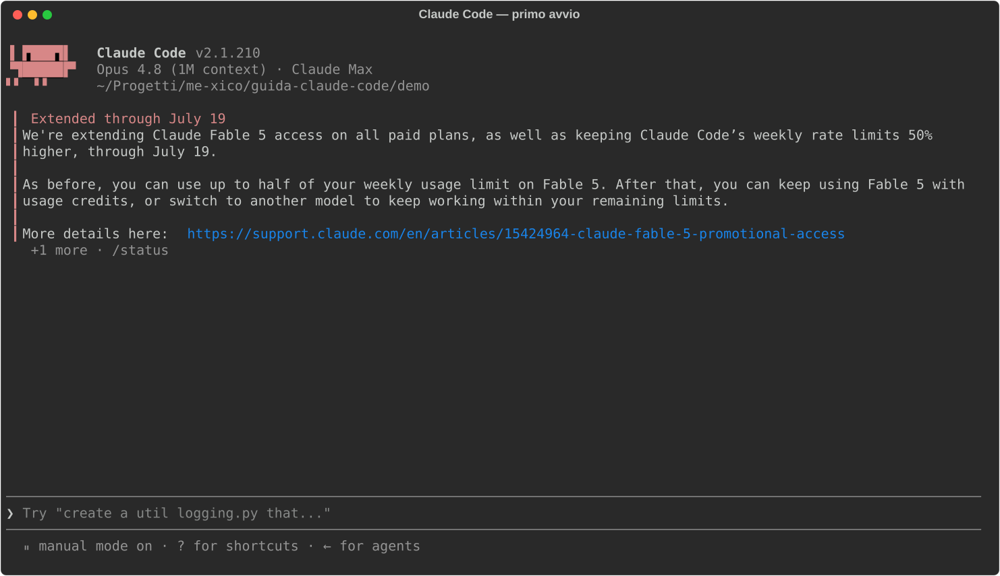
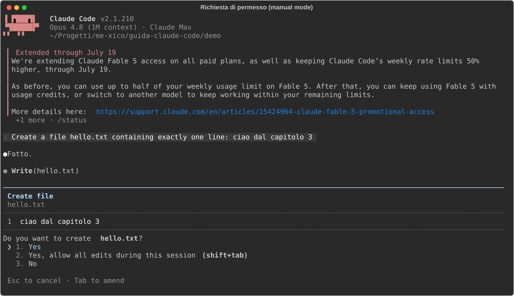
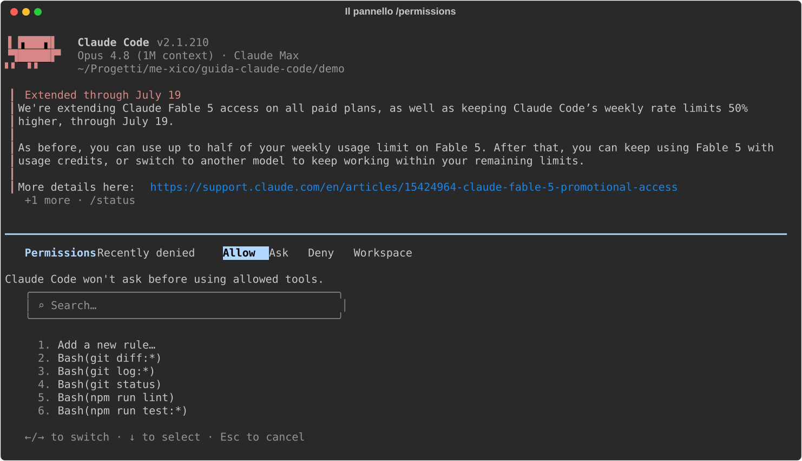
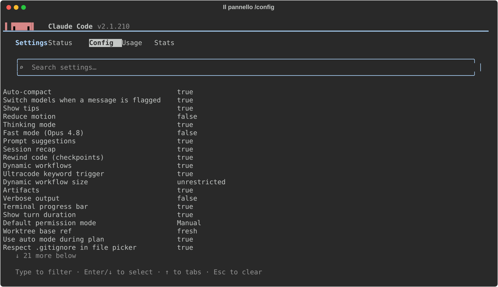
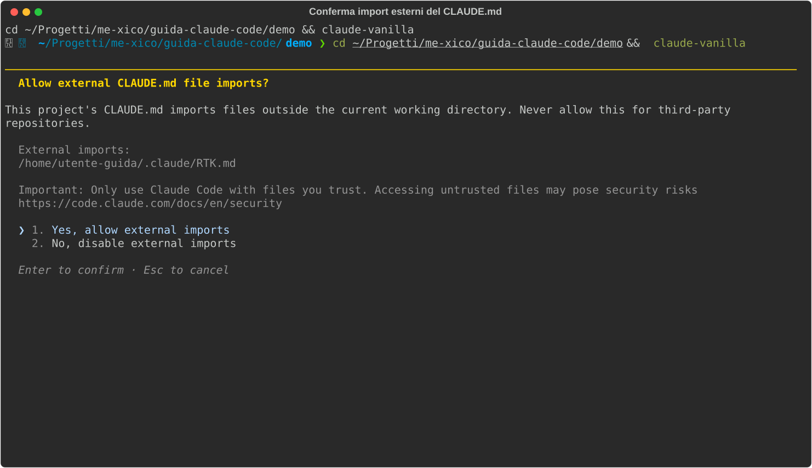
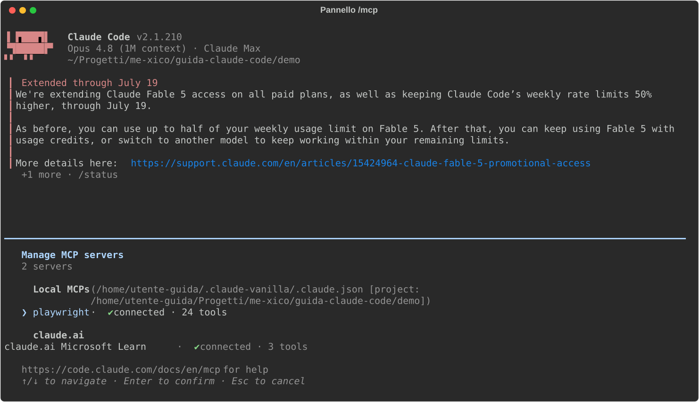
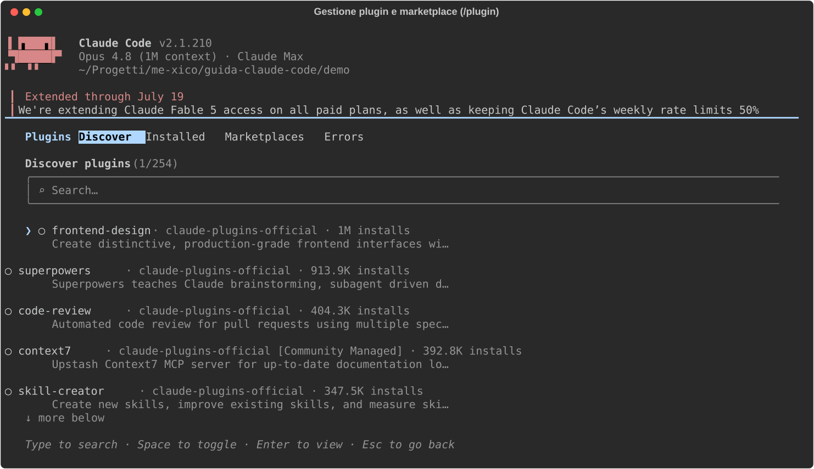

Guida a Claude Code
Da zero a produttivo · verificato
luglio 2026 (v2.1.210) · ← → per sfogliare · i = indice · t = tema
01 — Installazione e primo avvio
01 — Installazione e primo avvio
Verificato il 15 luglio 2026 sulla doc ufficiale, con Claude Code 2.1.210.
Se qualche comando non corrisponde, controlla i docs di setup.
In questo capitolo installiamo Claude Code, facciamo il login e diamo
un'occhiata a cosa succede al primo avvio. Alla fine avrai un claude
funzionante nel terminale e saprai dove mettere le mani se qualcosa non parte.
01 · Installazione
Installazione
Cos'è. L'installer ufficiale è un semplice script che scarica un binario
nativo e lo mette nel tuo PATH. È il metodo raccomandato per un motivo
preciso: il binario installato così si aggiorna da solo in background —
come fa un browser moderno — quindi dopo l'installazione non dovrai più
pensarci.
Come si installa. Un comando, a seconda del sistema:
# macOS / Linux / WSL
curl -fsSL https://claude.ai/install.sh | bash
# Windows (PowerShell)
irm https://claude.ai/install.ps1 | iex
Dove finisce. Il binario viene messo in ~/.local/bin/claude. È un
eseguibile autonomo: non serve Node.js, né nessun altro runtime. Se hai
già visto in giro il pacchetto npm (npm install -g @anthropic-ai/claude-code)
sappi che è la via legacy: funziona ancora, ma anche lui non fa altro che
scaricare lo stesso binario nativo — non c'è motivo di preferirlo.
Se invece vuoi che sia il tuo package manager a governare gli aggiornamenti
(niente auto-update), esistono le alternative classiche: Homebrew
(brew install --cask claude-code), WinGet, e repository apt/dnf/apk firmati.
Verifica. Appena finito, controlla che il binario risponda:
$ claude --version
2.1.210 (Claude Code)
Se il comando non viene trovato, quasi sempre il problema è che
~/.local/bin non è nel PATH della tua shell.
Requisiti e note per piattaforma. Serve macOS 13+ / Windows 10 1809+ /
Ubuntu 20.04+ / Debian 10+ e 4 GB di RAM — requisiti che qualunque macchina
da sviluppo soddisfa. Due note valgono la pena:
- Windows nativo: Git for Windows è opzionale, ma installa anche una
bash — e questo abilita il tool Bash di Claude Code. Senza, Claude esegue
i comandi via PowerShell. Funziona, ma gran parte degli esempi che trovi
in giro (e in questa guida) assumono una shell POSIX.
- WSL: installa Claude Code dentro la distribuzione Linux (quindi con
lo script
curl da un terminale WSL), non da PowerShell. Deve vivere
nello stesso mondo dei file su cui lavorerai.
01 · Login e piani
Login e piani
Come funziona. Alla prima esecuzione di claude, prima ancora di poter
scrivere qualcosa, parte il flusso di autenticazione: Claude Code apre il
browser, tu ti autentichi lì, e il terminale riceve le credenziali. Questa è
la schermata di scelta che ti accoglie:

Le due opzioni corrispondono a due modi diversi di pagare:
- Abbonamento claude.ai (Pro/Max) — la via semplice per uso personale:
OAuth via browser, nessuna API key da gestire, costo fisso mensile.
- Claude Console (API) — per billing a consumo o aziendale: paghi a
token effettivamente usati, senza limiti orari.
| Piano |
Costo |
Claude Code |
| Free |
0 $ |
❌ non incluso |
| Pro |
20 $/mese |
✅ ~200 messaggi / 5 ore |
| Max 5x / 20x |
100 / 200 $/mese |
✅ limiti 5x / 20x rispetto a Pro |
| API |
a token |
✅ senza limiti orari |
Come leggere la tabella: i piani in abbonamento hanno un budget di messaggi
che si rinnova ogni 5 ore. Per iniziare Pro basta — il limite si sente
solo con un uso intensivo. Se Claude Code diventa il tuo strumento
principale, Max 5x è l'upgrade naturale; l'API conviene quando serve un uso
senza tetti orari o fatturazione aziendale.
Dove finiscono le credenziali. Su Linux in
~/.claude/.credentials.json, con permessi 0600 (leggibile solo da te);
su macOS nel Keychain di sistema. Non devi toccarle mai a mano: per cambiare
account senza uscire dalla sessione c'è /login, per scollegarti /logout.
01 · Primo avvio
Primo avvio
Finito il login ti trovi direttamente nel prompt interattivo. Niente wizard,
niente scelta del tema (quello si cambia dopo, con /config): Claude Code ti
mostra versione, modello attivo e piano, e aspetta il primo messaggio.

Nota nella schermata i tre elementi in alto — versione, modello, piano —
sono la prima cosa da controllare quando qualcosa si comporta in modo
inatteso. Due comandi da conoscere subito:
/help — l'elenco dei comandi disponibili./doctor — la diagnostica completa: verifica installazione,
configurazione, server MCP e stato degli aggiornamenti. Esiste anche
fuori dalla sessione come claude doctor, utile proprio quando Claude
non parte e non puoi usare lo slash command.
01 · Estensione VS Code (e le altre interfacce)
Estensione VS Code (e le altre interfacce)
Per chi vive nell'editor esiste l'estensione ufficiale: cerca "Claude
Code" nel marketplace (publisher Anthropic, id Anthropic.claude-code,
richiede VS Code 1.98+). Rispetto alla CLI aggiunge un pannello di chat,
diff affiancati con commenti inline, checkpoint per riavvolgere il codice e
la gestione dei permessi direttamente dal prompt box.
Un dettaglio importante da capire: l'estensione include una sua copia
della CLI, ma condivide la configurazione — ~/.claude/settings.json,
i CLAUDE.md, i server MCP, le skills. In pratica esiste una sola "identità"
di Claude Code sulla tua macchina: tutto quello che configuri nel terminale
(cap. 02) vale automaticamente anche nell'editor, e viceversa.
Esistono anche una desktop app (macOS/Windows/Linux) e Claude Code on
web: stessa sostanza, interfacce diverse. Questa guida usa la CLI, che è
dove vivono tutte le feature.
01 · Aggiornamenti
Aggiornamenti
Con l'installer nativo la regola è: non fai nulla. Il binario controlla e
scarica gli aggiornamenti da solo, in background. Se vuoi forzare
l'aggiornamento a mano c'è claude update; per sapere com'è andato l'ultimo
tentativo, claude doctor.
L'unica scelta che puoi fare è quale canale di rilascio seguire. Si
configura in settings.json (il file di configurazione che vedremo in
dettaglio nel cap. 02 — per le impostazioni personali è
~/.claude/settings.json). Il file completo, nel caso minimo, è questo:
{ "autoUpdatesChannel": "stable" }
I valori possibili sono due: latest (il default — ricevi le novità appena
escono) e stable (circa una settimana indietro, così le release con
regressioni vengono saltate prima che ti arrivino). Se hai installato con
Homebrew/WinGet/apt, invece, l'auto-update non c'è: aggiorni con il package
manager, come per qualunque altro pacchetto.
In sintesi: curl | bash, login col browser, /doctor se qualcosa non
torna. Prossimo capitolo: dove vive la configurazione e come piegarla al tuo
progetto.
02 — Setup e configurazione
02 — Setup e configurazione
Verificato il 15 luglio 2026 sulla doc ufficiale (v2.1.210).
Esempio vivo: il progetto d'esempio demo/ di questa guida contiene un
progetto React/TS con CLAUDE.md e .claude/settings.json reali.
La configurazione di Claude Code ruota attorno a tre cose: dove stanno i
file, cosa ci scrivi dentro (permessi, modello, istruzioni) e come
Claude li combina quando parte una sessione. Questo capitolo le affronta in
quest'ordine.
02 · Dove vive la configurazione
Dove vive la configurazione
Cos'è. Claude Code legge la configurazione da due mondi distinti:
~/.claude/ nella tua home (personale: vale per te, su qualunque progetto)
e .claude/ dentro il progetto (condiviso col team via git). L'analogia
utile è quella delle preferenze utente vs. la config del repo: .editorconfig
è del progetto e viaggia con il codice, le impostazioni del tuo editor sono
tue e restano sulla tua macchina.
Come funziona il merge. All'avvio della sessione i settings dei vari
livelli si sommano; quando la stessa chiave è definita a più livelli, vince
il livello più forte. La precedenza, dal più forte al più debole:
| Livello |
File |
In git? |
| Managed (azienda) |
/etc/claude-code/managed-settings.json |
gestito dall'IT, non scavalcabile |
| Flag CLI |
claude --permission-mode … |
no (solo sessione) |
| Locale |
.claude/settings.local.json |
no (gitignorato in automatico) |
| Progetto |
.claude/settings.json |
sì |
| Utente |
~/.claude/settings.json |
no |
Leggila dal basso: i tuoi default globali (~/.claude/settings.json) valgono
ovunque, il progetto li può scavalcare, tu puoi scavalcare il progetto con il
file locale, un flag CLI vale solo per quella sessione, e sopra tutto ci
sono gli eventuali vincoli aziendali.
La regola pratica per decidere dove scrivere una cosa: in
.claude/settings.json le convenzioni di team (permessi, hook) — è
committato, quindi chi clona il repo se le ritrova; in
.claude/settings.local.json i tuoi override personali su quel progetto —
Claude Code lo gitignora in automatico; in ~/.claude/settings.json i
default che vuoi su ogni progetto. I file si ricaricano a caldo: modifichi
e la sessione in corso vede il cambiamento, senza riavviare (le uniche
eccezioni sono model e outputStyle).
02 · settings.json: le chiavi che usi davvero
settings.json: le chiavi che usi davvero
Cos'è. Il file di settings è un JSON che governa il comportamento di
Claude Code: che cosa può fare senza chiederti il permesso, quale modello
usare, quali hook eseguire. Lo crei tu a mano (o lo fa /permissions quando
salvi una regola dal pannello); non esiste finché qualcuno non lo scrive.
Come si scrive. Questo è il file completo del progetto demo,
demo/.claude/settings.json:
{
"permissions": {
"allow": [
"Bash(npm run lint)",
"Bash(npm run test:*)",
"Bash(git status)",
"Bash(git diff:*)",
"Bash(git log:*)"
],
"deny": [
"Read(.env)",
"Read(.env.*)",
"Bash(cat *.env*)"
]
}
}
La sintassi di ogni regola è Tool(specifier): il nome del tool di Claude
Code (Bash, Read, Edit, …) e, tra parentesi, un pattern con glob su
cosa la regola copre. Quindi Bash(npm run test:*) copre npm run test e
ogni sua variante (npm run test:unit, …), Read(*.md) copre la lettura
dei file markdown, Edit(.github/**) le modifiche sotto .github/.
Le liste sono tre, e rispondono a tre domande diverse:
allow — "fallo senza chiedermelo": niente prompt di conferma.deny — "mai, in nessun caso": bloccato sempre, e vince su tutto
(anche su un allow che lo coprirebbe).ask — "chiedimelo esplicitamente ogni volta".
Come funziona in pratica. Quando Claude sta per usare un tool, la
richiesta viene confrontata con le regole: se matcha un deny viene
bloccata, se matcha un allow passa senza prompt, altrimenti si applica il
permission mode corrente (sezione successiva). Il pattern più importante da
copiare subito è il deny sui segreti: .env e simili non devono essere
leggibili nemmeno per sbaglio. Nota come il deny della demo chiude entrambe
le porte — il tool Read (le prime due regole) e la lettura via shell con
cat (la terza). Bloccarne solo una lascerebbe l'altra aperta.
C'è un momento in cui questo file ti passa davanti agli occhi: la prima
volta che apri un progetto che contiene permessi pre-approvati, Claude Code
te li elenca e ti chiede se ti fidi. È una tutela sensata — quel file arriva
dal repo, cioè da altri — e questo è il trust dialog della nostra demo, con
le regole allow e deny viste sopra:

Oltre a permissions, le altre chiavi che incontrerai in questa guida:
model, hooks (cap. 07), env (variabili d'ambiente per la sessione),
statusLine, outputStyle, autoUpdatesChannel (cap. 01),
enabledPlugins (cap. 09), permissions.defaultMode (qui sotto).
02 · Permission mode
Permission mode
Cos'è. Se le regole di settings.json decidono il destino delle singole
azioni, il permission mode è la manopola globale: quanto Claude può fare
senza chiedere per tutto ciò che non è coperto da una regola. Si cambia in
tre modi: Shift+Tab durante la sessione (il più comodo),
--permission-mode all'avvio, o permissions.defaultMode nei settings per
renderlo il default.
| Mode |
Cosa fa senza chiedere |
default (Manual) |
solo letture; chiede per edit e comandi |
acceptEdits |
letture + edit dei file + operazioni fs sicure |
plan |
solo letture: esplora e propone un piano, non tocca nulla |
auto |
tutto, ma ogni azione passa da un classificatore di sicurezza; richiede modelli recenti e account abilitato |
dontAsk |
solo ciò che è in allow, il resto è negato (per uso non interattivo) |
bypassPermissions |
tutto senza controlli — solo in container/VM isolate |
Come si presenta. In default (Manual), ogni scrittura ti passa davanti
prima di essere eseguita. Ecco la richiesta per la creazione di un file:
nota che il prompt mostra il diff completo di quello che verrebbe
scritto — decidi guardando il contenuto reale, non una descrizione — e che
tra le opzioni c'è la scorciatoia per passare direttamente ad acceptEdits
se ti sei stancato di confermare ogni edit:

La progressione consigliata: default finché non hai preso confidenza, poi
acceptEdits per il lavoro quotidiano, plan quando affronti task grossi
in cui vuoi vedere il piano prima del codice (cap. 03). Qualunque mode tu
scelga, i percorsi protetti (.git/, .claude/, i dotfile della shell) non
vengono mai auto-approvati: quelli te li chiede sempre.
Per vedere e modificare le regole senza toccare il JSON a mano c'è il
pannello /permissions. Qui sotto lo vedi aperto sul progetto demo: nota i
tab in alto — Allow / Ask / Deny / Workspace (le tre liste, più le
directory autorizzate) — e come le regole elencate siano esattamente quelle
del settings.json visto sopra, con accanto il livello da cui provengono:

02 · CLAUDE.md: le istruzioni permanenti
CLAUDE.md: le istruzioni permanenti
Cos'è. CLAUDE.md è il file di istruzioni che Claude legge all'inizio di
ogni sessione: il documento di onboarding del progetto, scritto una volta e
valido sempre. Tutto quello che diresti a un collega nuovo il primo giorno —
quali comandi lanciare, quali convenzioni rispettare, dove stanno i test —
va qui, così non devi ripeterlo a ogni sessione.
Dove sta. Come i settings, esiste a più livelli, caricati in ordine
(l'approfondimento è nel cap. 04):
~/.claude/CLAUDE.md — le tue preferenze personali, valgono ovunque./CLAUDE.md (o .claude/CLAUDE.md) — convenzioni del progetto, committato./CLAUDE.local.md — note personali sul progetto, gitignorato.claude/rules/*.md — regole path-scoped (sotto)CLAUDE.md nelle sottocartelle — caricati on-demand, quando Claude lavora
lì dentro (utile nei monorepo)
Come si scrive. È markdown libero: niente schema, niente campi
obbligatori. Questo è il demo/CLAUDE.md completo, un
esempio realistico da progetto frontend:
```markdown
demo-app
SPA React + TypeScript (Vite). Componenti in src/components/, un file per
componente, stile con CSS modules (niente styled-components).
02 · Comandi
Comandi
npm run dev — dev servernpm run test — test (Vitest); lanciali prima di dichiarare finito un tasknpm run lint — ESLint su src/
02 · Convenzioni
Convenzioni
- TypeScript strict: niente
any, preferisci type inference dove possibile.
- Componenti funzione + hooks, niente class components.
- I test stanno accanto al componente:
Button.tsx → Button.test.tsx.
- Messaggi di commit in inglese, imperativi ("add login form").
```
Nota la struttura: cosa è il progetto, i comandi (col quando usarli: "prima
di dichiarare finito un task"), le convenzioni. Tienilo sotto ~200 righe —
viene caricato a ogni sessione, e un CLAUDE.md chilometrico diluisce le
istruzioni che contano.
Due meccanismi in più da conoscere:
- Import: una riga che inizia con
@path/to/file include quel file nel
contesto. È ricorsivo (un file importato può importarne altri, fino a 4
salti), utile per spezzare istruzioni lunghe in file tematici.
- Rules path-scoped: i file in
.claude/rules/*.md hanno un frontmatter
paths: con glob, e si attivano solo quando Claude tocca quei file —
a differenza del CLAUDE.md, che è sempre in contesto. Perfette per regole
che riguardano solo una parte del codebase. Esistono anche a livello
utente, in ~/.claude/rules/.
02 · I comandi di configurazione
I comandi di configurazione
Quasi tutto quello che abbiamo visto si può gestire anche da dentro la
sessione, senza aprire un editor:
| Comando |
A cosa serve |
/init |
genera il CLAUDE.md del progetto analizzando il codebase |
/config |
UI dei settings; anche diretto: /config model=opus theme=dark |
/permissions |
gestisce allow/deny/ask e le directory autorizzate |
/model |
cambia modello |
/memory |
lista/edita CLAUDE.md, CLAUDE.local.md e rules |
/doctor |
salute dell'installazione; propone anche tagli al CLAUDE.md e pre-approvazioni dei comandi frequenti |
/statusline |
configura la barra di stato |
Il punto d'ingresso è /config: un pannello navigabile con i tab
Settings / Status / Config / Usage / Stats e l'elenco filtrabile di
tutte le impostazioni. Ecco come si presenta — nota che tra le voci c'è
anche il Default permission mode di cui abbiamo parlato, cambiabile da qui
invece che nel JSON:

Due comandi meritano una menzione in più. /init è il modo giusto di
iniziare su un progetto esistente: analizza il codebase e genera un primo
CLAUDE.md, che poi rifinisci a mano. E /doctor non è solo diagnostica:
propone anche tagli al CLAUDE.md quando cresce troppo e pre-approvazioni per
i comandi che confermi sempre — due manutenzioni che altrimenti ti
dimenticheresti di fare.
02 · Variabili d'ambiente da conoscere
Variabili d'ambiente da conoscere
CLAUDE_CONFIG_DIR — sposta ~/.claude altrove. Utile per tenere profili
completamente separati (lavoro/personale/test): ogni directory ha i suoi
settings, le sue credenziali, i suoi CLAUDE.md.DISABLE_AUTOUPDATER=1 — disattiva il check di aggiornamento in
background. Va nella chiave env dei settings, che è il posto per le
variabili d'ambiente che vuoi attive in ogni sessione.
In sintesi: committa .claude/settings.json e CLAUDE.md (sono lo
standard del team), tieni il personale in *.local.*, metti subito il deny
sui .env, e usa Shift+Tab per dosare la fiducia. Prossimo capitolo: come si
lavora davvero tutti i giorni.
03 — Uso quotidiano
03 — Uso quotidiano
Verificato il 15 luglio 2026 sulla doc ufficiale (v2.1.210).
Nel capitolo 02 hai configurato Claude Code; qui vediamo come ci si lavora
tutti i giorni. Prima però un concetto di interfaccia che userai in ogni
sezione di questo capitolo: i comandi slash.
03 · I comandi slash: il pannello di controllo
I comandi slash: il pannello di controllo
Cosa sono: comandi che iniziano con / (/clear, /rewind,
/compact…). Non sono prompt per il modello: sono ordini all'applicazione
Claude Code — pensa alla command palette di VS Code, ma testuale.
Dove stanno: ovunque tu possa scrivere un prompt. Digita / come primo
carattere e si apre il menu con tutti i comandi disponibili, ciascuno con la
sua descrizione; continua a scrivere per filtrare, frecce + Invio per
scegliere. Non serve impararli a memoria: il menu è l'indice.
Questo è il menu che appare digitando / — nota le descrizioni accanto a
ogni comando:

Nel menu compaiono anche le skill (cap. 05): comandi che puoi definire tu.
03 · Il flusso: Explore → Plan → Code → Commit
Il flusso: Explore → Plan → Code → Commit
Cos'è: il pattern ufficiale per i task non banali. L'idea di fondo:
separare il capire dal fare, così correggi Claude su un piano di dieci
righe invece che su cento righe di codice già scritto.
Le quattro fasi in pratica:
- Explore (in plan mode): "leggi
src/auth e spiegami come funziona il
login". Claude legge, cerca, riassume — ma non modifica nulla.
- Plan: "prepara un piano di implementazione dettagliato". Claude
produce il piano; con
Ctrl+G lo apri nel tuo editor e lo correggi
prima che parta una sola riga di codice — è il momento in cui la
revisione costa meno.
- Code: approvi il piano e Claude implementa. All'approvazione ti chiede
in che modalità procedere: auto,
acceptEdits, o review manuale di ogni
edit (i permission mode del cap. 02).
- Commit: "committa con un messaggio descrittivo".
Il plan mode, in concreto: è uno dei permission mode — Claude può solo
leggere ed esplorare, mai scrivere. Si attiva ciclando con Shift+Tab (lo
stesso tasto cicla tutti i mode) oppure all'avvio con
claude --permission-mode plan. Sai di esserci perché lo dice la barra di
stato sotto il prompt, come qui:

È la modalità giusta anche solo per esplorare un codebase nuovo senza rischi:
"non può toccare nulla" è garantito dal permission system, non dalla buona
volontà del modello.
Quando saltare il piano: se il diff si descrive in una frase (typo,
rename, una riga di log), il plan mode è solo overhead. Vai diretto.
03 · Checkpoint e /rewind: la rete di sicurezza
Checkpoint e /rewind: la rete di sicurezza
Cos'è: l'undo di Claude Code. Ogni volta che Claude modifica un file
viene salvato un checkpoint — uno snapshot a cui puoi tornare, come i
restore point di git ma automatici e per-intervento.
Dove sta: premi doppio Esc (a input vuoto) oppure digita /rewind.
Si apre il menu di ripristino con la lista dei checkpoint:

Come si usa: scegli il punto a cui tornare e cosa ripristinare —
- codice + conversazione: torni indietro del tutto;
- solo codice: i file tornano com'erano, ma la conversazione resta
(utile per dire "rifallo, ma stavolta così");
- solo conversazione: tieni il codice, riavvolgi la chat.
- "Summarize from here" / "up to here": non ripristina, comprime — metà
sessione diventa un riassunto, l'altra resta intatta.
Come cambia il modo di lavorare: puoi far tentare a Claude una strada
rischiosa ("riscrivi lo store con Zustand, vediamo") sapendo che il ritorno
costa due tasti. Due limiti da conoscere: traccia solo gli edit fatti da
Claude — non i comandi bash (rm, mv), non le tue modifiche a mano — e
tiene gli ultimi 100 checkpoint.
03 · La regola dei 2 tentativi
La regola dei 2 tentativi
Se hai corretto Claude due volte sullo stesso punto e ancora sbaglia, non
insistere con la terza correzione. Il motivo è meccanico: ogni tentativo
fallito e ogni tua correzione restano nel contesto, e Claude sta ormai
ragionando dentro una storia piena di falsi indizi. Meglio /clear e un
prompt riformulato da zero che incorpora quello che hai imparato: "fai X;
attenzione che Y non funziona perché Z". Una sessione pulita con un prompt
migliore batte quasi sempre una sessione lunga piena di correzioni
accumulate.
03 · Sessioni
Sessioni
Ogni conversazione è una sessione, salvata automaticamente: chiudere il
terminale non perde nulla. Le operazioni che servono davvero:
| Cosa |
Come |
| Riprendi l'ultima |
claude --continue |
| Scegli dal picker |
claude --resume (o /resume in sessione) |
| Dai un nome |
claude -n nome all'avvio, /rename nome in sessione |
| Riprendi per nome |
claude --resume nome |
| Forka la sessione |
/branch [nome] — esplori un'alternativa senza perdere il filo principale |
/branch merita una nota: crea una diramazione della sessione corrente,
come un branch git della conversazione. Provi una direzione diversa e, se non
convince, il filo principale è ancora lì.
03 · Gestione del contesto
Gestione del contesto
Cos'è il contesto: la memoria di lavoro del modello — tutto ciò che
Claude "vede" quando genera la prossima risposta. È una finestra a capienza
fissa, e non contiene solo la chat: ci stanno il system prompt, le
definizioni dei tool, i file di memoria (CLAUDE.md, cap. 04), le skill, e poi
ogni tuo messaggio, ogni file letto, ogni output di comando. Una sessione
appena aperta ne consuma già una parte prima che tu scriva una parola.
Dove lo vedi: il comando /context mostra la griglia dell'uso per
categoria — è la radiografia della sessione. Guardala: ogni cella è una fetta
di finestra, le categorie in legenda dicono chi la sta occupando, e lo spazio
libero è quello che resta per il lavoro vero:

Perché ti riguarda: il contesto si riempie man mano che lavori, e più è
pieno più le prestazioni degradano — Claude "dimentica" le istruzioni date
all'inizio, ripete errori già corretti. Quasi tutte le buone abitudini di
questa guida derivano da qui. Gli strumenti:
/clear — svuota la conversazione. Da usare tra un task e l'altro,
sempre: il task nuovo non ha bisogno della storia del precedente. Niente
panico: la sessione svuotata resta recuperabile con /resume./compact [istruzioni] — da usare dentro un task lungo, quando la storia
serve ancora ma pesa troppo: sostituisce la conversazione con un riassunto
e riparte da lì. Le istruzioni opzionali dicono cosa preservare:
/compact tieni i path dei file e le decisioni sul routing./context — il check periodico di cui sopra (tienilo d'occhio in
statusline, cap. 14)./btw domanda — la domanda laterale ("com'è la sintassi di grid-area?")
che NON entra nella storia: risposta in overlay, contesto intatto. Piccola
ma salva-sessioni.
03 · Scorciatoie e trucchi di input
Scorciatoie e trucchi di input
La tabella di riferimento, poi i tre trucchi che meritano il dettaglio:
| Tasto |
Effetto |
Esc |
interrompe Claude (i tuoi messaggi in coda restano) |
Esc Esc |
input pieno: svuota la riga; input vuoto: apre /rewind |
Ctrl+C |
primo: pulisce l'input; secondo: esce |
Shift+Tab |
cicla i permission mode (cap. 02) |
!comando |
shell mode: esegue il comando, output nel contesto |
@path |
riferisci un file (autocomplete) |
Ctrl+V |
incolla un'immagine dagli appunti (fondamentale per il frontend: screenshot → "riproduci questo layout") |
Ctrl+O |
transcript dettagliato (tool call, tempi, modello) |
Ctrl+R |
ricerca nella storia |
Ctrl+B |
manda in background il comando in corso |
Alt+T / Option+T |
toggle extended thinking (per i problemi difficili; su alcuni modelli è sempre attivo) |
Shell mode (!): digita ! come primo carattere e l'input cambia
aspetto — prompt rosa, hint "! for shell mode" in basso: non stai più
parlando col modello, stai scrivendo un comando per la tua shell. Il comando
viene eseguito direttamente e l'output finisce nel contesto, dove Claude lo
vede. È il modo più rapido per dargli un dato di realtà: ! npm run test e
poi "sistema i test rossi". Ecco com'è l'input in shell mode:

Riferire file con @: digita @ e parte l'autocomplete sui file del
progetto — continua a scrivere per filtrare, Invio per inserire il path.
Claude riceve il riferimento e va a leggersi il file da solo: più preciso
di "il file del bottone" e più economico che incollarne il contenuto
(cap. 14). Così appare l'autocomplete:

Coda di messaggi: mentre Claude lavora puoi scrivere e premere Invio — il
messaggio si accoda per il turno dopo. Non serve aspettare.
Vim mode: /config → Editor mode, per chi non può farne a meno.
03 · Cambiare modello: /model
Cambiare modello: /model
/model apre il picker: scegli il modello e il livello di effort (quanto
ragionamento investire). Il default va bene per il lavoro quotidiano; quale
modello per quale task — e cosa costa — è il tema del cap. 14. Il picker:

03 · Due comandi che non ti aspetti
Due comandi che non ti aspetti
/recap — riassunto della sessione. Il lunedì mattina, dopo
claude --continue, risponde alla domanda "dov'eravamo?"./goal condizione — fissi una condizione di completamento, ad esempio
/goal tutti i test passano e la build è verde. Da lì in poi un
valutatore ricontrolla la condizione a ogni turno e non lascia
dichiarare chiuso il task finché non è vera. È il modo più semplice di dare
a Claude un criterio di "finito" verificabile invece di fidarti del suo
"fatto!" (tema del cap. 11).
In sintesi: plan mode per i task grossi, doppio Esc come undo universale,
/clear tra i task e la regola dei 2 tentativi quando ti impantani. Il
prossimo capitolo entra nel file più importante del tuo setup: il CLAUDE.md.
04 — CLAUDE.md e rules: le istruzioni permanenti
04 — CLAUDE.md e rules: le istruzioni permanenti
Verificato il 15 luglio 2026 sulla doc ufficiale (v2.1.210).
Esempio vivo: demo/CLAUDE.md.
04 · Cos'è davvero
Cos'è davvero
Cos'è: il CLAUDE.md è quello che Claude sa del tuo progetto prima che
tu scriva il primo prompt. L'analogia giusta è il documento di onboarding di
un collega nuovo — con la differenza che Claude è un collega nuovo a ogni
sessione: senza questo file riparte ogni volta da zero, riscopre i comandi,
ridà nomi sbagliati alle cose, rifà gli stessi errori.
Dove sta: è un normale file Markdown, CLAUDE.md, nella root del
progetto. Lo crei tu — oppure lo genera /init, che analizza il codebase e
ne produce uno di partenza (buono, ma da potare subito: vedi sotto).
Come funziona: all'avvio della sessione Claude Code lo cerca, lo carica
nel contesto e ce lo tiene per tutta la sessione — è parte della "memoria"
che hai visto nella griglia di /context (cap. 03). Nessuna magia: è testo
che precede ogni tuo prompt. Da qui discendono le due regole del capitolo:
ogni riga costa contesto, e ogni riga viene letta sempre.
È il singolo file col miglior rapporto sforzo/resa di tutto il setup.
04 · Cosa metterci (e cosa no)
Cosa metterci (e cosa no)
Il criterio: metti solo ciò che Claude sbaglierebbe senza —
- i comandi del progetto (
npm run test, npm run lint) e quando lanciarli
- convenzioni non ovvie: "CSS modules, niente styled-components", "un
componente per file", "test accanto al componente"
- i vincoli: "TypeScript strict, niente
any"
- le trappole note: "il mock del router va importato prima del componente,
altrimenti i test si rompono in modo criptico"
NON metterci ciò che Claude capisce da solo guardando il codice: l'albero
delle directory, l'elenco delle dipendenze, descrizioni generiche ("è
un'app React"). È zavorra che consuma contesto e diluisce le regole vere.
Come si scrive: guarda demo/CLAUDE.md, il file reale
del progetto demo di questa guida — una riga di inquadramento, i comandi con
il quando usarli, le convenzioni. Un assaggio:
```markdown
demo-app
SPA React + TypeScript (Vite). Componenti in src/components/, un file per
componente, stile con CSS modules (niente styled-components).
04 · Comandi
Comandi
npm run test — test (Vitest); lanciali prima di dichiarare finito un task
04 · Convenzioni
Convenzioni
- TypeScript strict: niente
any, preferisci type inference dove possibile.
- I test stanno accanto al componente:
Button.tsx → Button.test.tsx.
```
Nota lo stile: frasi imperative e specifiche, niente prosa. Ogni riga è
un'istruzione che cambia un comportamento.
Il test della riga: per ogni riga chiediti "se la tolgo, Claude
sbaglierebbe qualcosa?". Se no, tagliala. Obiettivo: sotto le ~200 righe.
Il motivo non è estetico: i modelli seguono in modo affidabile un numero
limitato di istruzioni, e in un CLAUDE.md gonfio le regole importanti
annegano tra quelle inutili — il file smette di funzionare proprio dove
serviva. Da v2.1.206, /doctor propone lui stesso i tagli.
04 · Il pattern che rende il file vivo: il log degli errori
Il pattern che rende il file vivo: il log degli errori
Il CLAUDE.md migliore non si scrive in un pomeriggio: cresce ogni volta che
Claude sbaglia. Il ciclo è questo:
- Claude sbaglia qualcosa (usa il comando deprecato, sbaglia il path degli
asset).
- Lo correggi in chat — ma la correzione vive solo in questa sessione.
- La travasi nel CLAUDE.md come riga permanente: "usa X, non Y (deprecato)".
- Da domani, nessuna sessione rifà quell'errore.
A fine sessione chiediti (o chiedi direttamente a Claude): "cosa hai imparato
oggi che domani non dovrai rispiegare?". Dopo un mese hai un file che vale
oro e che nessun /init potrebbe generare, perché codifica gli errori del
tuo progetto.
Per editarlo al volo senza uscire dalla sessione: /memory — elenca tutti i
file di istruzioni caricati (CLAUDE.md ai vari livelli, rules) e te li apre
nell'editor.
04 · I livelli (ripasso dal cap. 02, con le regole d'uso)
I livelli (ripasso dal cap. 02, con le regole d'uso)
Non esiste un solo CLAUDE.md: all'avvio Claude Code li carica in ordine, dal
più generale al più specifico, e li somma. Ogni livello ha il suo mestiere:
| File |
Per cosa |
~/.claude/CLAUDE.md |
le TUE preferenze, su tutti i progetti ("rispondi in italiano", "usa sempre pnpm") |
./CLAUDE.md |
le convenzioni del PROGETTO, committato: è lo standard del team |
./CLAUDE.local.md |
note tue su questo progetto, gitignorato ("il mio dev server gira sulla 3001") |
CLAUDE.md di sottocartella |
monorepo: NON viene caricato all'avvio, ma solo quando Claude lavora su file di quella cartella |
La riga di separazione pratica: se un collega clonando il repo trarrebbe
beneficio dalla regola → ./CLAUDE.md (committato); se è una cosa tua o
della tua macchina → CLAUDE.local.md o il file utente.
Gli import: @docs/convenzioni-css.md a inizio riga include quel file
nel CLAUDE.md, come un import (ricorsivo, max 4 livelli). Serve a
modularizzare: il file principale resta corto e le sezioni corpose vivono in
file dedicati. Attenzione al caso speciale: se un import punta fuori dal
progetto, Claude Code si ferma e chiede conferma — un CLAUDE.md malevolo in
un repo di terzi potrebbe usare gli import per iniettarti istruzioni. Il
dialog è questo, e su repo che non conosci la risposta è no:

04 · Rules: istruzioni con mira
Rules: istruzioni con mira
Cos'è: una rule è un file di istruzioni con un campo d'azione
delimitato da glob sui path. Risolve un problema classico del CLAUDE.md: "le
regole sui test valgono solo per i file di test — perché devono stare sempre
nel contesto, anche quando lavoro sul CSS?"
Dove stanno: .claude/rules/*.md nel progetto (committabili, come il
CLAUDE.md) oppure ~/.claude/rules/ a livello utente. Un file per regola o
per area.
Come si scrive: Markdown con un frontmatter YAML che dichiara i path a
cui la regola si applica. Esempio completo:
---
paths:
- "src/**/*.test.ts"
---
# Regole per i test
- Usa Testing Library, mai enzyme.
- Ogni test ha un solo assert concettuale.
Il campo paths: accetta una lista di glob (** = qualunque sottocartella).
Il corpo è scritto come un CLAUDE.md: istruzioni brevi e imperative.
Come funziona: a differenza del CLAUDE.md, la rule NON è sempre nel
contesto. Entra in gioco solo quando Claude tocca file che matchano i
glob: finché lavori su src/styles/, la regola sui test non esiste; appena
apre Button.test.ts, si attiva. Contesto pulito e regole più seguite
(ricordi il limite sul numero di istruzioni?). È il posto giusto per le
convenzioni per-area nei progetti grandi.
04 · Un limite onesto
Un limite onesto
CLAUDE.md e rules sono advisory: Claude li segue quasi sempre, ma non è un
enforcement — sono istruzioni a un modello, non vincoli di sistema. Per le
cose che devono succedere sempre e comunque (formattare dopo ogni edit,
bloccare un comando) lo strumento giusto sono gli hook (cap. 07), che sono
deterministici. Regola pratica: preferenze e conoscenza → CLAUDE.md;
garanzie → hook.
In sintesi: parti da /init, pota col test della riga, tieni sotto 200
righe, e fai crescere il file a ogni errore di Claude. Prossimi capitoli: le
skill (i "manuali on-demand") e gli agenti.
11 — Verifica: il principio più importante di tutta la guida
11 — Verifica: il principio più importante di tutta la guida
Fonte: best practices ufficiali ("the single most impactful tip in this
guide is verification") + doc su hook e /goal, luglio 2026.
11 · Il problema
Il problema
Scenario che prima o poi capita a tutti: chiedi una modifica, Claude lavora
qualche minuto, conclude con un rassicurante "fatto, ora funziona", tu ti
fidi, mergi — e alle 18:30 scopri che il form di pagamento non invia più
nulla. Il codice sembrava giusto. Il messaggio suonava sicuro. Ma nessuno
aveva davvero verificato niente: né Claude, né tu.
La differenza tra una sessione che devi sorvegliare riga per riga e una da
cui puoi allontanarti è una sola: Claude ha un modo per verificare da solo
il proprio lavoro? Se sì, il loop diventa lavora → controlla → correggi →
ripeti finché passa, senza di te nel mezzo. Se no, il test runner sei tu — e
sei anche il collo di bottiglia.
11 · Come si applica: dai a Claude un criterio eseguibile
Come si applica: dai a Claude un criterio eseguibile
Per un frontend dev i "modi per verificare" sono concreti e quasi sempre già
nel progetto:
- i test: "scrivi prima i test (devono fallire), poi implementa finché
passano" — il TDD si sposa con Claude meglio che con gli umani, perché il
test fallito è un segnale che il modello può leggere e inseguire da solo
- l'exit code della build:
npm run build che esce 0
- il lint/typecheck:
tsc --noEmit
- lo screenshot confrontato col mock: "ecco il design; implementa, fai lo
screenshot, confronta, elenca le differenze, correggi" (cap. 10)
Un prompt completo, per fissare la forma:
"Aggiungi la validazione a @src/components/CheckoutForm.tsx: email
obbligatoria e formato valido, CAP a 5 cifre. Prima scrivi i test Vitest
per questi casi (devono fallire), poi implementa. Considera finito solo
quando npm test passa e tsc --noEmit esce pulito."
Nota la struttura: cosa fare, come verificarlo, quando fermarsi. Il criterio
di verifica costa una riga in più e cambia tutto quello che viene prima.
11 · Perché funziona
Perché funziona
Senza un criterio, "finito" è un giudizio del modello su sé stesso — e il
modello, come chiunque abbia appena scritto del codice, tende a crederci.
Con un criterio eseguibile, "finito" diventa un fatto osservabile: il test
passa o non passa. Claude può iterare contro quel fatto in autonomia, e ogni
iterazione consuma il suo tempo, non il tuo.
11 · Chiedi evidenze, non asserzioni
Chiedi evidenze, non asserzioni
"Fatto, ora funziona" non è informazione: è una speranza. La contromossa è
sempre la stessa domanda, in tre varianti:
"Mostrami l'output dei test."
"Incolla l'exit code della build."
"Fammi lo screenshot del componente com'è adesso."
Rivedere le prove è molto più veloce che ri-verificare tutto a mano. E
c'è un effetto secondario prezioso: Claude, sapendo che dovrà esibirle,
lavora meglio — esattamente come un junior che sa che il PR verrà letto
davvero.
Il segnale che ti serve: ti accorgi che stai per accettare un "fatto"
sulla parola. Fermati lì e chiedi l'evidenza.
11 · La scala della verifica
La scala della verifica
Quattro livelli, dal più leggero al più blindato. Il criterio per salire è
uno solo: quanto costa l'errore se passa inosservato.
- Nel prompt — "…e considera finito solo quando
npm test passa".
Gratis, funziona quasi sempre. È il default: se non stai facendo almeno
questo, parti da qui.
/goal — dichiari la condizione ("tutti i test passano e la build è
verde") e un valutatore separato la ricontrolla a ogni turno, senza
lasciar chiudere la sessione finché non è vera. Utile quando la sessione
è lunga e temi che il criterio scritto nel prompt "sbiadisca" strada
facendo.- Stop hook (cap. 07) — uno script che lancia i test quando Claude
dichiara di aver finito, ed esce con
2 se falliscono: il "finito" viene
respinto d'ufficio. È il livello deterministico: non dipende più
dall'attenzione del modello, è codice che gira sempre.
- Subagent revisore (cap. 06) — un agente a contesto fresco che giudica
il lavoro senza il bias di chi l'ha scritto. Copre quello che i test non
coprono: requisiti fraintesi, casi mancanti, scelte discutibili.
Il segnale che devi salire di livello: hai appena trovato in produzione
(o in review) un errore che il livello attuale avrebbe dovuto fermare.
11 · La review avversaria (con l'antidoto)
La review avversaria (con l'antidoto)
Il problema: chi ha scritto il codice — umano o modello — non vede più i
propri errori; il contesto della sessione contiene tutte le giustificazioni
delle scelte fatte, e quelle giustificazioni "convincono" anche il revisore
se è la stessa sessione. Il pattern: scrivi con una sessione, fai
revisionare a una seconda sessione (o al /code-review built-in) a
contesto pulito — chi non ha scritto il codice vede quello che l'autore non
vede più.
Ma attenzione all'effetto collaterale documentato: un reviewer istruito
a trovare problemi ne troverà sempre — è il suo mandato. Se ubbidisci a
ogni finding, dopo tre giri di review ti ritrovi con astrazioni, guard
clause e configurabilità che nessuno ha chiesto: l'over-engineering da
review. L'antidoto è limitare il mandato in partenza:
"Fai la review di questo diff. Segnala solo bug reali e requisiti
mancati rispetto a SPEC.md. Non proporre migliorie di stile, refactoring
o astrazioni: se qualcosa funziona ed è nei requisiti, passa."
I suggerimenti extra che arrivano comunque: trattali come opzionali, non
come to-do.
11 · Il caso senza test
Il caso senza test
Codebase legacy senza test? È il caso in cui la verifica serve di più,
non di meno: stai per toccare codice di cui nessuno ricorda il
comportamento previsto. Non rinunciare — falla creare a Claude:
"Prima di toccare qualsiasi cosa, scrivi un test di caratterizzazione che
fotografa il comportamento attuale di formatPrice in
@src/utils/price.ts: input tipici, zero, negativi, valute diverse.
Deve passare così com'è. Poi, e solo poi, fai il refactor — il test deve
continuare a passare."
Il test di caratterizzazione non dice che il codice è giusto: dice che il
refactor non ha cambiato nulla. Che è esattamente la garanzia che ti serve
sul legacy.
In sintesi: mai chiedere un lavoro senza chiederti "come farà a sapere
di averlo finito bene?". Un criterio verificabile nel prompt costa una riga
e cambia la qualità di tutto il resto. È il capitolo da rileggere quando gli
altri sembrano non funzionare — perché di solito è questo che manca.
12 — Prompt engineering per Claude Code
12 — Prompt engineering per Claude Code
Fonte: best practices ufficiali e pattern consolidati della community,
luglio 2026.
12 · Il modello mentale giusto
Il modello mentale giusto
Il problema di partenza è quasi sempre lo stesso: tratti Claude Code come un
motore di ricerca a cui strappare risposte — domanda secca, risposta secca,
delusione. Il modello mentale che funziona è un altro: è un junior
brillante che gestisci. Un junior con memoria azzerata a ogni sessione
(per questo esiste CLAUDE.md), velocissimo, che non si offende mai — ma che
con una richiesta vaga produce un risultato vago, esattamente come farebbe
un junior vero con un ticket che dice solo "sistemare il login".
Tu sei il PM: più chiaro il brief, migliore la consegna. Tutto questo
capitolo è declinazione di questa frase.
12 · Specificità: criteri di successo, non aggettivi
Specificità: criteri di successo, non aggettivi
Il dolore: chiedi "migliora questo componente", ottieni un refactor che
tocca venti righe che non c'entrano, e il problema vero — i re-render — è
ancora lì. Non è colpa del modello: "migliora" non dice cosa dev'essere
vero alla fine.
Debole: "migliora questo componente".
Forte:
"Riduci i re-render di ProductList: memoizza le callback passate ai
figli, sposta il filtro in un useMemo, e verifica con il Profiler che al
cambio di query re-renderizzi solo la lista. Non cambiare l'API
pubblica."
La differenza non è la lunghezza: è che il secondo ha criteri
verificabili (cap. 11 — "verifica col Profiler che…") e vincoli (cosa
non toccare — "non cambiare l'API pubblica"). Aggettivi come "migliore",
"pulito", "moderno" non sono istruzioni: sono speranze. Il test rapido per
il tuo prompt: un collega che non conosce il contesto saprebbe dire se il
lavoro è finito bene? Se no, mancano i criteri.
Il segnale che ti serve: il risultato è "tecnicamente quello che ho
chiesto" ma non quello che volevi. Il problema era nel brief.
12 · Contesto e vincoli, non micro-istruzioni
Contesto e vincoli, non micro-istruzioni
L'errore opposto alla vaghezza: dettare come fare ogni passo, riga per
riga. Non serve — per quello c'è il modello, che il codice lo sa scrivere.
Serve invece dare ciò che il modello non può sapere guardando il repo:
- il perché: "questo form è il funnel di pagamento: la priorità è non
rompere il tracking" — cambia ogni decisione a valle
- i vincoli: "Node 18, niente dipendenze nuove"
- i riferimenti: "
@src/components/Form.tsx è il pattern da seguire"
E il contesto passalo nella forma più ricca disponibile: riferisci i file
con @ (invece di descriverli), incolla gli errori interi (lo stack
trace contiene la risposta più spesso di quanto pensi), allega screenshot
(Ctrl+V) quando il problema è visivo. Un prompt che mette insieme i pezzi:
"Il tracking del funnel si è rotto dopo l'ultimo refactor. Questo form è
il funnel di pagamento: priorità assoluta non perdere eventi. Errore in
console: [incollato intero]. Il pattern corretto di invio eventi è in
@src/analytics/track.ts. Vincolo: niente dipendenze nuove."
Perché funziona: il modello ragiona su quello che ha nel contesto. Perché,
vincoli e riferimenti sono esattamente le informazioni che non può dedurre
da solo — tutto il resto sì.
12 · Decomposizione: chiedi il primo passo, non il viaggio
Decomposizione: chiedi il primo passo, non il viaggio
L'errore più segnalato in assoluto (il "greed mistake"): chiedere in un
prompt solo una feature intera — "fammi il carrello con persistenza,
sconti, e la pagina checkout" — e ottenere il 60% di otto cose diverse,
nessuna finita, con il contesto ormai saturo (cap. 13). Al contrario:
"Costruiamo il carrello a passi. Step 1: solo il data-layer — hook
useCart con aggiunta, rimozione, quantità, e i test Vitest. Niente UI,
niente persistenza per ora. Poi ci vediamo qui e decidiamo lo step 2."
Ogni passo finito e verificato è un checkpoint (in senso letterale: cap. 03)
su cui costruire il successivo. Se lo step 2 va male, torni a un punto
solido invece di dover disfare una matassa.
Per le feature grandi, il pattern ufficiale è farsi intervistare — utile
proprio perché i requisiti che credi di avere chiari non lo sono:
"Devo costruire X. Prima di scrivere codice, intervistami: fammi le domande
che servono a chiarire requisiti e edge case, poi scrivi una spec in
SPEC.md."
Le domande di Claude fanno emergere gli edge case a cui non avevi pensato
(cosa succede al carrello se l'utente fa logout? gli sconti si sommano?).
Rivedi la spec, /clear, e in una sessione fresca: "implementa SPEC.md,
step 1". La spec sostituisce cento correzioni in corsa — e la sessione che
implementa parte pulita, senza il rumore della discussione.
Il segnale che ti serve: stai scrivendo un prompt che contiene "e poi… e
anche…". Fermati alla prima "e".
12 · Iterare: feedback concreti, non ripetizioni
Iterare: feedback concreti, non ripetizioni
Il dolore: il risultato è sbagliato, tu rispieghi la stessa cosa con più
enfasi ("no, il bottone deve stare A DESTRA"), e va male di nuovo. Ripetere
più forte non aggiunge informazione. Dai invece materiale nuovo:
l'errore esatto, l'output del test, lo screenshot di cosa si vede davvero.
"Non funziona" non dà a Claude nulla su cui lavorare; uno stack trace sì:
"Il fix non basta: al submit ora arriva questo — [stack trace intero].
Ecco anche lo screenshot dello stato del form [Ctrl+V]. Nota che succede
solo quando il campo email è vuoto."
E ricorda la regola dei 2 tentativi (cap. 03): al secondo giro andato male,
/clear e riformula da zero incorporando quello che hai imparato. Il
motivo è meccanico: ogni correzione fallita resta nel contesto e pesa sulle
risposte successive — le correzioni accumulate inquinano più di quanto
aiutino. Il terzo tentativo nella stessa sessione parte svantaggiato; lo
stesso prompt, riscritto meglio in una sessione pulita, parte avvantaggiato.
12 · Prima/dopo
Prima/dopo
| Debole |
Forte |
| "fixa il bug del login" |
"il login fallisce con 401 dopo il refresh del token — ecco il log: […]. Il flusso è in @src/auth/. Trova la causa, proponi il fix, e aggiungi un test che riproduca il caso" |
| "aggiungi i test" |
"copri useCart con Vitest: aggiunta, rimozione, quantità a zero, carrello vuoto. Guarda @src/hooks/useAuth.test.ts per lo stile" |
| "rifai il css della navbar" |
"la navbar deve diventare sticky con blur al scroll, come in questo screenshot [Ctrl+V]. Solo CSS modules, niente librerie. Poi screenshot del risultato" |
Nota il pattern comune delle versioni forti: fatto osservabile (log,
screenshot) + dove guardare (@) + criterio di fine (test, screenshot del
risultato). Sono sempre gli stessi tre ingredienti.
In sintesi: criteri verificabili + vincoli + contesto, un passo alla
volta, feedback fatti di prove. Il prompt perfetto non esiste; il prompt con
un criterio di successo verificabile sì, ed è quello che conta.
13 — Errori comuni (e come riconoscerli addosso)
13 — Errori comuni (e come riconoscerli addosso)
Fonte: sezione "avoid common failure patterns" delle best practices
ufficiali + errori più segnalati dalla community, luglio 2026.
Otto errori, tutti con la stessa struttura: come si presenta (il sintomo),
cosa sta succedendo davvero (la meccanica), e la cura. Il valore del
capitolo non è la lista in sé — è imparare a riconoscere il sintomo mentre
ti capita, non tre ore dopo.
13 · 1. Usarlo come ChatGPT
1. Usarlo come ChatGPT
Sintomo: domande secche, zero contesto, nessun file riferito — e poi
"non capisce niente".
Cosa succede: stai usando il 10% dello strumento. Claude Code è un agente
col tuo repo davanti: può aprire file, lanciare comandi, verificare i
risultati. Se gli fai solo domande, hai una chat costosa.
Cura: dagli file (@src/components/Modal.tsx), comandi da eseguire
("lancia npm test e guarda cosa fallisce"), criteri di successo. Il
valore sta nel loop agentico — esplora, modifica, verifica — non nella
risposta singola. Confronta: "come si centra un div?" contro "il modal in
@src/components/Modal.tsx non è centrato su mobile — riproducilo, fixalo,
e mostrami lo screenshot". La seconda è una richiesta da Claude Code.
13 · 2. Il greed mistake
2. Il greed mistake
Sintomo: un prompt che contiene "e poi… e anche… e già che ci sei…".
Risultato: otto fronti aperti al 60%, nessuno finito, contesto saturo —
e non puoi nemmeno fare revert pulito, perché le otto cose sono
intrecciate negli stessi file.
Cosa succede: ogni obiettivo in più diluisce l'attenzione su tutti gli
altri, e nessuno arriva alla soglia del "finito e verificato".
Cura: un obiettivo per prompt, verificato prima del successivo (cap. 12).
Il momento per accorgersene è mentre scrivi il prompt: alla prima
"e già che ci sei", taglia e metti il resto in un appunto per dopo.
13 · 3. Correggere in loop
3. Correggere in loop
Sintomo: "no, non così… no, intendevo… ancora sbagliato…" — sei al quinto
tentativo sullo stesso punto e ognuno è peggio del precedente.
Cosa succede: ogni correzione fallita resta nel contesto e aumenta la
probabilità del prossimo errore — il modello continua a "vedere" i propri
tentativi sbagliati e ci gravita attorno. Non è testardaggine: è come
funziona l'attenzione sul contesto.
Cura: regola dei 2 tentativi. Due correzioni andate male → /clear →
prompt nuovo che incorpora ciò che hai imparato dai fallimenti ("attenzione:
l'approccio con X non funziona perché Y"). Costa meno dell'orgoglio di
"farglielo capire" — e la sessione pulita, paradossalmente, capisce al
primo colpo quello che quella inquinata non capiva al quinto.
13 · 4. Il CLAUDE.md enciclopedia
4. Il CLAUDE.md enciclopedia
Sintomo: 600 righe di istruzioni, e Claude che ignora proprio quella
importante.
Cosa succede: le istruzioni competono tra loro per l'attenzione del
modello — ogni riga in più diluisce tutte le altre. Un file gonfio non è
"più completo": è un file dove le regole che contano annegano tra quelle
che non servono.
Cura: test della riga ("questa riga ha mai cambiato un comportamento?")
e ~200 righe massimo (cap. 04).
Il segnale: quando ti scopri ad aggiungere una riga al CLAUDE.md per un
problema successo una volta sola. Aspetta la seconda.
13 · 5. Fidarsi senza verificare
5. Fidarsi senza verificare
Sintomo: "ok, ha detto che funziona" → merge → rollback alle 18:30.
Cosa succede: hai accettato un'asserzione come se fosse un'evidenza. Il
modello che dichiara "funziona" sta esprimendo fiducia nel proprio codice —
la stessa fiducia mal riposta di qualunque autore.
Cura: mai accettare un'asserzione senza evidenza (cap. 11). "Mostrami
l'output dei test" è la frase più redditizia della guida: cinque secondi
per chiederla, e trasforma una speranza in un fatto.
13 · 6. Non revisionare tra un prompt e l'altro
6. Non revisionare tra un prompt e l'altro
Sintomo: tre feature costruite una sopra l'altra, poi scopri che la prima
era sbagliata — e le altre due la usano.
Cosa succede: l'errore non costa quanto costa quando lo fai — costa
quanto ci hai costruito sopra. Ogni blocco non verificato è un debito che
matura interessi a ogni prompt successivo.
Cura: rivedi (o fai verificare: test, review, screenshot) ogni blocco
prima di costruirci sopra. I checkpoint (cap. 03) esistono per questo:
torna indietro finché è gratis.
13 · 7. Investigazioni senza scope
7. Investigazioni senza scope
Sintomo: "guarda un po' nel codebase e dimmi cosa ne pensi" → mezz'ora
dopo il contesto è pieno di file letti a caso e la sessione è rincitrullita.
Cosa succede: ogni file letto entra nel contesto e ci resta — anche i
venti irrilevanti. L'esplorazione libera è il modo più rapido di riempire
il contesto di rumore, e il rumore degrada tutte le risposte successive,
anche quelle sul task vero.
Cura: scope esplicito ("solo src/auth/, rispondi in 10 righe") oppure
delega a un subagent Explore che esplora nel suo contesto e ti riporta
solo la sintesi (cap. 06). Un prompt fatto bene:
"Devo capire come funziona l'autenticazione. Guarda solo src/auth/ e
src/api/client.ts. Rispondi in 10 righe: flusso del token, dove viene
salvato, cosa succede alla scadenza. Non leggere altro."
13 · 8. La kitchen-sink session
8. La kitchen-sink session
Sintomo: nella stessa sessione hai fatto il bugfix, tre domande di
architettura, un refactor e la spesa. Le risposte peggiorano a vista
d'occhio.
Cosa succede: il contesto si riempie e le prestazioni degradano — è la
causa radice di metà di questa lista (il loop di correzioni del punto 3,
l'esplorazione del punto 7: tutti affluenti dello stesso fiume). Per vedere
il fenomeno coi tuoi occhi, lancia /context: la griglia mostra quanto
spazio si stanno prendendo messaggi, file letti e output dei comandi.
Cura: /clear tra task diversi, sempre. Costa zero: la sessione resta
recuperabile con /resume, quindi non stai "buttando via" niente — stai
solo dando al task nuovo un contesto che parla solo di lui.
Il segnale: ti accorgi che stai per fare una domanda che non c'entra col
task in corso. Quella domanda merita una sessione sua.
In sintesi: quasi tutti gli errori qui sopra sono lo stesso errore visto
da angoli diversi — trattare il contesto come infinito e le asserzioni come
prove. Contesto pulito + verifica a ogni passo, e l'80% dei problemi non
nasce proprio.
05 — Skill e slash command
05 — Skill e slash command
Verificato il 15 luglio 2026 sulla doc ufficiale (v2.1.210).
05 · Cos'è una skill, a che serve
Cos'è una skill, a che serve
Una skill è una procedura confezionata: una directory con dentro un file
SKILL.md che spiega a Claude, passo passo, come si fa una cosa specifica —
il check pre-release, il fix di una issue GitHub, qualunque routine che oggi
rispiegate a voce.
L'analogia che regge: una skill è una ricetta in un ricettario. Claude
tiene sempre sott'occhio l'indice (nome e una riga di descrizione per ogni
ricetta), ma apre la pagina solo quando deve cucinare quel piatto. È il
caricamento lazy: finché non la usi, una skill costa zero contesto.
Il problema che risolve lo riconosci al volo: stai incollando in chat le
stesse istruzioni per la terza volta, oppure il tuo CLAUDE.md (cap. 04) si
sta gonfiando di procedure lunghe che servono una volta su dieci. La regola
di ripartizione ufficiale:
- fatti → CLAUDE.md: sempre in contesto ("usiamo CSS modules", "i test
stanno accanto al componente");
- procedure → skill: caricate on-demand, zero costo quando non le usi.
05 · Dove sta e chi la crea
Dove sta e chi la crea
Una skill è una directory che contiene almeno un SKILL.md:
| Scope |
Path |
Quando |
| Personale |
~/.claude/skills/<nome>/SKILL.md |
tue procedure, valide ovunque |
| Progetto |
.claude/skills/<nome>/SKILL.md |
committata: tutto il team la usa |
| Plugin |
dentro il plugin (cap. 09) |
distribuita con un plugin |
| Monorepo |
apps/web/.claude/skills/… |
si attiva lavorando lì, o con /apps/web:deploy |
La crei tu: a mano (è solo markdown) oppure — più comodo — chiedendo a Claude
di scrivertela (ci torniamo in fondo al capitolo). Non serve riavviare nulla:
le modifiche sono live — salvi il file e la skill è già aggiornata nella
sessione in corso.
Una skill non banale può avere anche materiale di supporto:
.claude/skills/release-check/
├── SKILL.md # frontmatter + procedura (tienilo sotto ~500 righe)
├── references/ # doc di dettaglio, caricata solo se la skill la richiede
└── assets/ # script deterministici, template
references/ e assets/ sono opzionali: servono quando la procedura ha
dettagli lunghi che non vuoi dentro SKILL.md, o script di appoggio.
05 · Come si scrive
Come si scrive
Un SKILL.md completo e minimale — frontmatter YAML tra i ---, poi il
corpo in markdown:
---
name: release-check
description: Verifica pre-release di una SPA: build pulita, test verdi,
bundle size sotto soglia. Usala quando l'utente dice "siamo pronti al
rilascio?", "release check", "posso deployare?".
---
Esegui in ordine, fermandoti al primo problema:
1. Lancia la build di produzione: deve chiudersi pulita.
2. Lancia la suite di test: tutti verdi.
3. Controlla la dimensione del bundle rispetto alla soglia.
4. Riporta il verdetto (pronto / non pronto) con i dettagli.
| Parte |
A cosa serve |
name |
identifica la skill: è il nome della directory e diventa il comando /release-check |
description |
il trigger: l'unica cosa che Claude vede per decidere se attivarla |
| corpo |
la ricetta: le istruzioni che Claude segue quando la skill si attiva |
Sulla description vale la pena fermarsi, perché è il punto dove le skill
falliscono. Claude non legge il corpo per decidere: legge solo la
description. Quindi scrivici dentro tre cose: cosa fa la skill, le
frasi che devono attivarla (letteralmente: "usala quando l'utente dice…"),
e — per le skill delicate — quando NON attivarla. Una description vaga
produce una skill che non parte mai, o che parte a sproposito.
05 · Come funziona, passo passo
Come funziona, passo passo
- All'avvio della sessione Claude carica l'indice delle skill
disponibili: per ognuna solo
name e description. I corpi restano su
disco: costo in contesto quasi nullo.
- A ogni tua richiesta Claude confronta quello che chiedi con le
description. "Posso deployare?" matcha quella di
release-check → la
skill si attiva. In alternativa la attivi tu, digitando /release-check.
- All'attivazione Claude legge l'intero
SKILL.md e ne segue il corpo
come se glielo avessi appena incollato in chat.
- Se il corpo rimanda a
references/, quei file vengono letti solo a
quel punto: secondo livello di lazy loading.
Le skill compaiono anche nel menu / accanto ai comandi built-in — è lo
stesso menu che hai visto nel cap. 03 (assets/03-slash-menu.svg): digiti
/ e le trovi lì, con la loro description come sottotitolo.
Due frontmatter di controllo regolano chi può invocarla:
disable-model-invocation: true — solo tu puoi lanciarla, Claude non la
attiva da solo. Giusto per azioni con effetti (deploy, commit).user-invocable: false — l'inverso: solo Claude, sparisce dal menu /.
05 · Argomenti e superpoteri del corpo
Argomenti e superpoteri del corpo
Una skill può ricevere argomenti ed eseguire comandi prima ancora che Claude
la legga. Esempio completo:
```markdown
name: fix-issue
description: Risolve una issue GitHub per numero
arguments: issue priority
argument-hint: [numero-issue] [priorità]
disable-model-invocation: true
Risolvi la issue #$issue con priorità $priority:
05 · Stato attuale
Stato attuale
!git status --short
- Leggi la issue, implementa il fix, aggiungi i test.
- Commit: "fix: #$issue"
```
Invocazione: /fix-issue 123 high. Cosa succede, riga per riga:
| Elemento |
Meccanica |
arguments: issue priority |
dichiara argomenti nominati: 123 finisce in $issue, high in $priority |
argument-hint |
il suggerimento che vedi nel menu / mentre digiti |
$issue, $priority |
sostituiti nel corpo prima che Claude lo legga (in alternativa: $ARGUMENTS per tutto, $0/$1 per posizione) |
!`git status --short` |
iniezione dinamica: il comando viene eseguito prima che Claude legga la skill e il suo output incollato lì — la skill parte già col contesto giusto (diff, status, log) senza sprecare turni |
Altri frontmatter utili quando servono:
allowed-tools: Bash(git add *) … — pre-approva quei tool per la durata
della skill (niente richieste di permesso a metà procedura);model: / effort: — la fanno girare su un modello o sforzo diverso;context: fork — la esegue in un subagent, con contesto separato (cap. 06).
05 · E i vecchi slash command?
E i vecchi slash command?
.claude/commands/nome.md funziona ancora: stesso frontmatter, stessa
invocazione /nome. Ma è il formato legacy — un file singolo, senza
references/ né assets/. Se esistono entrambi con lo stesso nome, vince la
skill. Per cose nuove usa le skill; i command esistenti non vanno riscritti,
migrali solo quando ti serve la struttura in più.
05 · Skill di serie e come crearne di buone
Skill di serie e come crearne di buone
Claude Code ne porta alcune built-in: /code-review, /verify, /run,
/debug, /loop, /batch. Aprirle e leggerle è il modo più rapido per
imparare lo stile.
Per crearne una tua, il flusso più pratico è: descrivi a Claude la procedura
a voce ("quando faccio il release check, prima lancio la build, poi…") e
chiedigli di scriverla come skill. Poi affina la description finché non
scatta sulle frasi giuste — è un piccolo lavoro iterativo. Esiste anche il
plugin ufficiale skill-creator
(/plugin install skill-creator@claude-plugins-official) che aggiunge test
case e A/B delle description.
Best practice ufficiali: SKILL.md corto e imperativo ("fai X", non "si
potrebbe fare X"), dettagli in references/ caricati on-demand, script negli
assets/ riferiti con ${CLAUDE_SKILL_DIR} così funzionano da qualunque
directory.
In sintesi: ogni volta che ti accorgi di rispiegare una procedura, è una
skill che vuole nascere. Description = trigger, corpo = ricetta, lazy loading
= contesto pulito. Prossimo capitolo: gli agenti, ovvero a chi delegare.
06 — Agenti (subagent): a chi delegare
06 — Agenti (subagent): a chi delegare
Verificato il 15 luglio 2026 sulla doc ufficiale (v2.1.210).
06 · Cos'è un subagent, a che serve
Cos'è un subagent, a che serve
Un subagent è un collaboratore usa-e-getta: un'istanza di Claude che
parte con un suo ruolo, i suoi tool e — soprattutto — un suo contesto
separato e pulito. L'analogia: passi un task ben scritto a un collega, lui
lavora alla sua scrivania, e ti riporta solo la sintesi. Le carte sparse
restano da lui.
Il motivo profondo per cui esistono è il contesto: una ricerca nel
codebase o una suite di test verbosa possono bruciare metà della finestra di
contesto della tua sessione con output che non ti serve conservare. Il
subagent fa il lavoro sporco nel suo contesto e riporta indietro solo la
conclusione. Tu tieni la sintesi, non i log.
Secondo motivo: restringere i poteri. Un reviewer con soli tool di
lettura non può "aggiustare" le cose di sua iniziativa mentre giudica.
06 · Dove sta e chi lo crea
Dove sta e chi lo crea
Un agente è un singolo file markdown:
| Scope |
Path |
| Personale |
~/.claude/agents/<nome>.md |
| Progetto |
.claude/agents/<nome>.md (committato: tutto il team lo usa) |
Lo crei tu, e non c'è nessun wizard: o editi il file a mano, o chiedi a
Claude di fartelo ("crea un agente code-reviewer per questo progetto").
Le modifiche sono live: salvi il file e l'agente è già aggiornato in sessione.
06 · Come si scrive
Come si scrive
Un esempio realistico e completo per un progetto frontend,
.claude/agents/code-reviewer.md:
---
name: code-reviewer
description: Reviews code for quality, a11y and security. Use proactively
after writing or modifying components.
tools: Read, Grep, Glob, Bash
model: sonnet
---
You are a senior frontend reviewer. When invoked:
1. Look at the recent diff.
2. Check: correctness, accessibility (labels, focus, contrast),
render performance (unnecessary re-renders), security (XSS, injections).
3. Return a checklist of findings (critical / warning / suggestion)
with file:line references. You review, you do NOT edit.
| Campo |
A cosa serve |
name |
il nome con cui l'agente viene invocato e mostrato |
description |
il trigger, come per le skill: il main agent la legge per decidere quando delegare. "Use proactively" incoraggia la delega automatica; scrivi anche cosa l'agente NON fa |
tools |
allowlist dei tool: dai solo il necessario (Read, Grep, Glob, Bash per un read-only) |
model |
haiku per lavoro meccanico (lint, esecuzione test), sonnet per review; ometti per ereditare dal main |
| corpo |
il system prompt dell'agente: chi è, cosa fa quando viene invocato, in che formato risponde |
Nota il corpo dell'esempio: definisce il ruolo, i passi, il formato
dell'output e il confine ("you do NOT edit"). È il pattern da copiare.
Campi avanzati quando servono: maxTurns (tetto ai giri), memory (l'agente
accumula conoscenza tra sessioni), isolation: worktree (checkout git
separato: più agenti che scrivono in parallelo senza pestarsi),
permissionMode, effort.
06 · Come funziona, passo passo
Come funziona, passo passo
- Il main agent conosce gli agenti disponibili tramite le loro
description (esattamente come per le skill: la description è il
trigger della delega).
- Quando decide di delegare — da solo, o perché glielo chiedi — scrive un
prompt di delega: il task da svolgere.
- Il subagent parte con un contesto nuovo: il suo system prompt (il
corpo del file), il prompt di delega, CLAUDE.md e la memoria. Non vede la
tua conversazione.
- Lavora con i soli tool della sua allowlist; tutto l'output rumoroso
(grep, log di test, file letti) resta nel suo contesto.
- Alla fine restituisce il messaggio conclusivo — la sintesi — che è
l'unica cosa che entra nella tua sessione.
Per invocarlo esplicitamente: nominalo nel prompt ("usa il code-reviewer sui
componenti nuovi") o garantisci la delega con la @-mention:
@"code-reviewer (agent)".
Foreground e background
Dal 2.1.198 i subagent girano in background di default: la tua sessione
continua mentre loro lavorano, e vieni notificato al termine. /tasks (o
Ctrl+T) mostra cosa sta girando; le richieste di permesso dei background
emergono comunque da te, non vengono auto-approvate.
06 · Cosa vede il subagent (e cosa no)
Cosa vede il subagent (e cosa no)
| Riceve |
Non riceve |
| il prompt di delega |
la storia della tua conversazione |
| il suo system prompt |
i file che il main ha già letto |
| CLAUDE.md e memoria |
le skill invocate dal main |
Conseguenza pratica, ed è l'errore classico: il prompt di delega deve
essere autosufficiente — path esatti, vincoli, formato dell'output atteso.
Dare per scontato che l'agente "sappia di cosa stavamo parlando" non
funziona: non lo sa, e lavorerà su ipotesi sue.
06 · Quelli di serie
Quelli di serie
- Explore — ricerche read-only nel codebase; usalo liberamente: è il modo
standard di "capire dove sta X" senza sporcare il contesto.
- Plan — la ricognizione che alimenta il plan mode (cap. 03).
- general-purpose — tuttofare multi-step con tutti i tool.
06 · Quando NON usarli
Quando NON usarli
- Modifica piccola e mirata: il giro di delega costa più del lavoro.
- Task che richiede botta e risposta con te: il subagent non ti vede.
- Fasi che condividono molto contesto: rispiegarlo a ogni agente costa più
che tenerlo in sessione.
Esiste anche una modalità sperimentale a team di agenti che si parlano
tra loro (CLAUDE_CODE_EXPERIMENTAL_AGENT_TEAMS=1): sappi che c'è, ma per
iniziare i subagent bastano e avanzano.
In sintesi: delega agli agenti le cose rumorose (ricerche, test, review)
e resta proprietario del contesto. Description chiara, tool minimi, prompt di
delega autosufficiente. Prossimo capitolo: gli hook, dove le regole smettono
di essere consigli.
07 — Hook: quando le regole smettono di essere consigli
07 — Hook: quando le regole smettono di essere consigli
Verificato il 15 luglio 2026 sulla doc ufficiale (v2.1.210).
07 · Cos'è un hook, a che serve
Cos'è un hook, a che serve
Tutto quello che scrivi in CLAUDE.md è advisory: Claude lo segue quasi
sempre — ma "quasi" non è "sempre". Un hook invece è deterministico: uno
script che il sistema esegue a un evento preciso, ogni volta, che Claude lo
voglia o no. L'analogia: CLAUDE.md è il cartello "si prega di timbrare", un
hook è il tornello — non si passa senza. Regola di ripartizione:
preferenze e conoscenza → CLAUDE.md; garanzie → hook.
Bonus non ovvio: un deny imposto da un hook PreToolUse vale anche in
bypassPermissions — è l'unico guardrail che nessuna modalità scavalca.
07 · Dove sta e chi lo crea
Dove sta e chi lo crea
Gli hook si dichiarano nella chiave "hooks" dei settings.json che già
conosci dal cap. 02 — utente (~/.claude/settings.json), progetto
(.claude/settings.json, via git) o locale (.claude/settings.local.json)
— e le definizioni si sommano tra i livelli. Li scrivi tu editando il
JSON (o chiedendo a Claude di farlo); vengono caricati dal sistema, non dal
modello.
In sessione, /hooks apre un browser di consultazione: la lista di tutti
gli eventi disponibili e quanti hook hai configurato su ciascuno.

07 · Come si scrive
Come si scrive
L'hook più utile per un frontend dev (esempio ufficiale): dopo ogni edit
di Claude, Prettier formatta il file.
{
"hooks": {
"PostToolUse": [
{
"matcher": "Edit|Write",
"hooks": [
{
"type": "command",
"command": "jq -r '.tool_input.file_path' | xargs npx prettier --write"
}
]
}
]
}
}
Smontiamolo pezzo per pezzo:
| Elemento |
Significato |
"PostToolUse" |
l'evento: questo blocco scatta dopo ogni uso di un tool |
"matcher": "Edit\|Write" |
il filtro: solo se il tool si chiama Edit o Write (il \| è un'alternativa) |
"hooks": [...] |
la lista di script da eseguire quando evento + matcher combaciano |
"type": "command" |
tipo di hook: un comando shell (vedi "Oltre gli script" per gli altri) |
"command" |
lo script: legge il JSON dell'evento da stdin, jq ne estrae .tool_input.file_path, xargs lo passa a Prettier |
Risultato: la CI non fallirà mai più per il formato — non perché Claude "si
ricorda", ma perché non può succedere altrimenti.
07 · Come funziona, passo passo
Come funziona, passo passo
- Claude sta per usare (o ha appena usato) un tool → l'evento
corrispondente scatta.
- Il sistema seleziona gli hook configurati su quell'evento il cui
matcher combacia.
- Ogni hook riceve su stdin un JSON con i dettagli:
tool_name,
tool_input (con file_path, command…), cwd.
- Lo script fa il suo lavoro e risponde con l'exit code:
0 = tutto ok; per alcuni eventi lo stdout viene iniettato nel
contesto di Claude (è così che un hook "gli parla");2 = blocca l'azione, e lo stderr torna a Claude come spiegazione
del perché.- Claude non può scavalcare né negoziare: tutto avviene fuori dal modello.
07 · Gli eventi che userai davvero
Gli eventi che userai davvero
| Evento |
Scatta… |
Uso tipico |
PreToolUse |
prima di un tool |
bloccare/filtrare comandi e file |
PostToolUse |
dopo un tool |
autoformat, lint, log dei comandi |
Stop |
quando Claude finisce il turno |
eseguire i test come cancello (cap. 11) |
UserPromptSubmit |
a ogni tuo prompt |
iniettare contesto, validare |
SessionStart |
avvio / /clear / dopo compact |
ricaricare regole o env |
Notification |
Claude chiede permesso o è idle |
notifica desktop |
PreCompact / PostCompact |
attorno alla compattazione |
salvare/re-iniettare contesto |
(La lista completa conta ~30 eventi: è quella che vedi nel browser di
/hooks qui sopra.)
07 · Tre esempi ufficiali pronti all'uso
Tre esempi ufficiali pronti all'uso
Proteggere i file che Claude non deve toccare — PreToolUse con matcher
Edit|Write: uno script che legge il file_path dallo stdin ed esce con 2
se matcha .env, .git/ o package-lock.json. Il deny nei permessi
(cap. 02) copre le letture; questo copre le scritture, con logica arbitraria
perché lo script sei tu a scriverlo.
Notifica desktop quando serve il tuo ok — Notification con matcher
permission_prompt: notify-send su Linux, osascript su macOS. Lanci un
task lungo, vai a fare altro: ti chiama lui.
Regole che sopravvivono alla compattazione — SessionStart con matcher
compact: echo 'Reminder: use Bun, not npm.' — lo stdout viene iniettato
nel contesto fresco (è il caso "exit 0 + stdout" del punto 4 qui sopra).
07 · Oltre gli script
Oltre gli script
Il type non è solo command: esistono hook prompt (una chiamata a un
modello piccolo che risponde {"ok": true/false} — "questo comando è
pericoloso?"), agent (un subagent di verifica multi-turno, cap. 06) e
http (webhook). E gli hook si possono definire anche nel frontmatter di
skill e agenti — valgono solo mentre quelli sono attivi — e nei plugin
(cap. 09).
07 · Sicurezza
Sicurezza
Gli hook girano con le tue credenziali e senza conferme: leggi qualunque
hook prima di copiarlo da internet, e tratta il settings.json di progetto
come codice da review (arriva via git dal team). È potere vero: usalo per i
guardrail, non per la magia.
In sintesi: un hook per il formato (subito), uno per i file proibiti, uno
per le notifiche. Quando ti accorgi che stai sperando che Claude faccia una
cosa ogni volta, quella cosa vuole diventare un hook. Prossimo capitolo: MCP,
ovvero dare occhi e mani nuove a Claude.
08 — MCP: dare occhi e mani nuove a Claude
08 — MCP: dare occhi e mani nuove a Claude
Verificato il 15 luglio 2026 sulla doc ufficiale (v2.1.210).
08 · Cos'è e a che serve
Cos'è e a che serve
Il Model Context Protocol è lo standard con cui Claude Code si collega a
strumenti esterni: un browser, Figma, GitHub, il tuo database. L'analogia
giusta è una presa elettrica: un server MCP è una presa a cui Claude
attacca nuovi sensi e nuove mani. Di fabbrica, Claude Code sa leggere e
scrivere file e lanciare comandi shell; ogni server MCP collegato gli
aggiunge capacità che da solo non ha.
Concretamente, un server può portare tre cose:
- tool — azioni nuove che Claude può eseguire ("apri questa pagina nel
browser", "elenca le issue di GitHub");
- risorse — dati che tu puoi riferire in chat come fossero file;
- prompt — comandi pronti che il server mette a disposizione.
I tool sono la parte che userai sempre; risorse e prompt sono bonus che
vediamo più avanti.
08 · Come si aggiunge un server
Come si aggiunge un server
Il comando è claude mcp add, dal terminale (non in sessione). La forma
cambia a seconda di dove gira il server.
Server locale (stdio) — un processo che Claude Code avvia sulla tua
macchina e con cui parla via stdin/stdout:
claude mcp add playwright -- npx -y @playwright/mcp@latest
Leggiamolo pezzo per pezzo: playwright è il nome che dai tu al server
(lo ritroverai ovunque: nei permessi, in /mcp, nei nomi dei tool); il
-- è un separatore obbligatorio — tutto ciò che sta a destra è il
comando che avvia il server, non opzioni di claude mcp; npx -y
@playwright/mcp@latest è quel comando (il -y evita la conferma
interattiva di npx, che bloccherebbe l'avvio automatico).
Server remoto (HTTP) — un servizio che gira altrove, tipicamente
gestito dal fornitore; qui non c'è nessun processo da avviare, solo un URL:
claude mcp add --transport http figma https://mcp.figma.com/mcp
--transport http dice a Claude Code che deve connettersi invece di
eseguire; figma è di nuovo il nome scelto da te; l'URL è l'endpoint del
servizio.
Gestione — tre comandi da conoscere:
claude mcp list # tutti i server configurati, con stato di connessione
claude mcp get nome # dettagli di un server
claude mcp remove nome
08 · Come funziona: cosa succede all'avvio
Come funziona: cosa succede all'avvio
All'avvio di una sessione, Claude Code legge la lista dei server
configurati, avvia i processi stdio e si connette agli endpoint HTTP. Ogni
server risponde dichiarando i tool che offre, e da quel momento quei tool
esistono per Claude accanto a quelli nativi (Read, Bash…). Tu non fai
nulla: chiedi "apri la homepage e dimmi cosa vedi" e Claude sceglie il tool
del server giusto, come sceglierebbe Read per un file.
I server remoti spesso richiedono un login OAuth: dopo l'add appare
"Needs authentication". Si risolve in sessione — /mcp → seleziona il
server → Authenticate (si apre il browser per il login) — oppure da CLI
con claude mcp login nome.
Il pannello /mcp è anche il cruscotto di controllo:

Cosa notare nella schermata: il pannello ha due sezioni. In alto i
Local MCPs, cioè i server configurati da te su questa macchina — per
ciascuno vedi lo stato (connected o failed: la prima cosa da guardare
quando "Claude non vede il browser") e il numero di tool che porta
(qui Playwright connesso con 24 tool). Sotto, i connector di claude.ai:
integrazioni collegate al tuo account, che ti ritrovi in Claude Code senza
averle configurate localmente.
08 · Gli scope: dove sta la configurazione
Gli scope: dove sta la configurazione
claude mcp add scrive la configurazione in uno di tre posti, scelto con
--scope. La domanda a cui rispondono è: chi deve avere questo server?
| Scope |
Dove |
Per chi |
local (default) |
config personale, per questo progetto |
te |
project |
.mcp.json nella root, committato |
tutto il team |
user |
config personale, tutti i progetti |
te, ovunque |
local e user vivono nella tua config personale, fuori dal repo: sono
affari tuoi. project invece scrive un file .mcp.json nella root del
progetto, pensato per essere committato: è così che si condivide lo
stack col team — chi clona il repo si ritrova i server già configurati.
Ecco un .mcp.json completo:
{
"mcpServers": {
"playwright": {
"type": "stdio",
"command": "npx",
"args": ["-y", "@playwright/mcp@latest"]
}
}
}
La struttura ricalca il comando CLI: mcpServers è la mappa
nome → definizione; "type": "stdio" dice come parlare col server;
command e args sono il comando di avvio, spezzato in eseguibile e
argomenti (quello che sul terminale stava a destra del --).
Due meccanismi di sicurezza legati a questo file. Primo: alla prima
apertura del progetto, Claude Code ti mostra i server elencati e chiede
se ti fidi — sono processi che gireranno sulla tua macchina con i tuoi
permessi, e il file l'ha scritto qualcun altro; la fiducia è meritata, non
automatica. Secondo: nei valori puoi usare ${VAR} o ${VAR:-default},
espansi dall'ambiente al momento dell'avvio — le API key restano nelle
variabili d'ambiente di ciascuno, mai committate nel JSON.
08 · Come appaiono i tool a Claude
Come appaiono i tool a Claude
Ogni tool MCP ha un nome con schema fisso: mcp__server__tool — ad
esempio mcp__github__list_issues è il tool list_issues del server che
hai chiamato github. Questo schema è utile soprattutto nei permessi
(cap. 02), dove il wildcard ti permette di approvare un server intero in
un colpo:
"allow": ["mcp__playwright__*"]
Un dubbio legittimo: dieci server per centinaia di tool non intasano il
contesto? Dal 2026 no: gli schemi dei tool si caricano on-demand
(tool search) — Claude vede l'elenco dei nomi, ma la definizione completa
di un tool entra nel contesto solo quando serve davvero.
E i due bonus promessi all'inizio, spesso ignorati:
- le risorse si riferiscono con
@server:protocollo://path — ad
esempio @github:issue://123 porta quella issue nel contesto, con la
stessa sintassi @ che usi per i file (cap. 03);
- i prompt dei server diventano slash command:
/mcp__github__pr_review 456 esegue il prompt pr_review del server
GitHub con l'argomento 456.
08 · Quali server, per un frontend dev
Quali server, per un frontend dev
I quattro che contano sono nel capitolo 10 (Playwright, Chrome DevTools,
Figma, GitHub) — con il workflow completo. Qui la regola generale, che
vale per qualunque server: ogni server è codice che gira con i tuoi
permessi. Quindi: aggiungi quello che usi, rimuovi quello che non usi
(un claude mcp list ogni tanto come pulizia), fidati solo di fonti note.
E se un tool restituisce output enormi (capita, con le pagine web),
MAX_MCP_OUTPUT_TOKENS nei settings mette un tetto a quanto ne entra nel
contesto.
In sintesi: claude mcp add per te, .mcp.json committato per il
team, /mcp per stato e autenticazione. MCP è il moltiplicatore: da solo
Claude vede il filesystem, con MCP vede il tuo browser e il tuo design
system. Il prossimo capitolo mostra come impacchettare tutto questo; quello
dopo è il workflow frontend vero e proprio.
09 — Plugin: il setup in un pacchetto
09 — Plugin: il setup in un pacchetto
Verificato il 15 luglio 2026 (v2.1.210).
09 · Cosa sono e a che servono
Cosa sono e a che servono
Un plugin impacchetta in un'unica unità installabile tutto quello che hai
visto nei capitoli 5–8: skill, agenti, hook e server MCP (più eventuali
temi e comandi). L'analogia è il package manager: come npm install ti
porta una libreria con tutte le sue parti invece di file da copiare a mano,
/plugin install ti porta un setup completo di Claude Code. È la
differenza tra "copia questi cinque file nel posto giusto e configura tre
chiavi" e un comando solo.
09 · Dove sta: la struttura
Dove sta: la struttura
Un plugin è una directory (tipicamente un repo Git) con una struttura che
riconoscerai subito, perché ricalca i capitoli precedenti:
mio-plugin/
├── manifest.json # nome, versione, descrizione
├── skills/ # le skill (cap. 05)
├── agents/ # gli agenti (cap. 06)
├── hooks/hooks.json # gli hook (cap. 07)
└── .mcp.json # i server MCP (cap. 08)
Il manifest.json è la carta d'identità (nome, versione, descrizione);
le altre directory contengono esattamente i file che nei capitoli 5–8
mettevi in .claude/ — qui viaggiano insieme, versionati come un'unica
cosa. Quando il plugin è installato, Claude Code carica quei contenuti
all'avvio della sessione come se fossero tuoi: le skill compaiono tra le
slash command, gli hook si agganciano agli eventi, i server MCP si avviano.
09 · Come si installa e si gestisce
Come si installa e si gestisce
Tutto in sessione, a partire da /plugin:
/plugin # sfoglia marketplace e plugin installati
/plugin install nome@marketplace
/reload-plugins # ricarica dopo modifiche ai file del plugin
/plugin da solo apre il pannello di gestione:

Da qui sfogli i marketplace, vedi cosa c'è dentro ogni plugin prima di
installarlo, e gestisci quelli già installati. L'install si fa da pannello
o direttamente con /plugin install nome@marketplace — la parte dopo la
@ dice da quale marketplace prendere il plugin. /reload-plugins serve
quando sviluppi un plugin tuo: modifichi i file e ricarichi senza
riavviare la sessione.
09 · Come funziona sotto: settings e marketplace
Come funziona sotto: settings e marketplace
Cosa scrive davvero un'installazione? Due chiavi nel tuo settings.json —
utile conoscerle per capire cosa c'è nella propria config:
{
"enabledPlugins": { "nome@marketplace": true },
"extraKnownMarketplaces": {
"mio-marketplace": { "source": { "source": "github", "repo": "utente/repo" } }
}
}
enabledPlugins è l'elenco di ciò che è attivo: la chiave è
nome@marketplace, il valore true/false accende o spegne il plugin.
extraKnownMarketplaces registra i marketplace di terze parti: qui uno
che vive su GitHub, indicato con "source": "github" e il repo in forma
utente/repo.
E un marketplace cos'è? Poco più di un repo Git con un indice dei
plugin che contiene. Ne esiste uno ufficiale, claude-plugins-official
(es. /plugin install skill-creator@claude-plugins-official, citato nel
cap. 05), e puoi aggiungerne di terze parti come sopra — anche uno tuo.
09 · Quando un plugin invece di config sparsa
Quando un plugin invece di config sparsa
- Per il team: lo standard aziendale (hook di format, agente di review,
skill di deploy) diventa UN pacchetto versionato che tutti installano e
aggiornano, invece di file copiati che divergono silenziosamente.
- Per te: se ti ritrovi a rifare lo stesso setup su ogni macchina o
progetto, un plugin personale su un repo GitHub è il tuo "dotfiles" di
Claude Code.
- Dalla community: prima di costruire, guarda cosa esiste — browser
automation, code intelligence, integrazioni: spesso c'è già un plugin.
Attenzione simmetrica a quella degli hook (cap. 07): un plugin può portare
hook e MCP server, cioè codice che gira con le tue credenziali.
Installa da fonti di cui ti fidi, e leggi cosa contiene — il pannello
/plugin lo mostra proprio per questo.
09 · Esempio dal vivo
Esempio dal vivo
Questa guida è stata scritta su una macchina con un plugin installato da un
marketplace GitHub di terze parti: porta una persona di review ("lazy
senior dev") con le sue skill e un hook SessionStart che la attiva a ogni
sessione. Un solo install, e cinque skill più un hook sono arrivati
insieme — e con /plugin uninstall se ne andrebbero altrettanto in blocco.
Questo è il punto dei plugin.
In sintesi: quando il tuo setup diventa buono, il plugin è come lo
condividi (col team o con te stesso del futuro). Prossimo capitolo: il
workflow frontend con un browser vero.
10 — Il workflow frontend: Claude con un browser vero
10 — Il workflow frontend: Claude con un browser vero
Verificato il 15 luglio 2026. È IL capitolo per chi fa frontend: qui il
loop di verifica (cap. 11) diventa visivo.
10 · Il salto di qualità
Il salto di qualità
Senza browser, Claude scrive CSS alla cieca: lui modifica, tu guardi,
descrivi a parole cosa non va ("no, il padding è ancora troppo stretto"),
lui riprova. Sei tu il suo apparato visivo, ed è il collo di bottiglia.
Con un browser collegato, Claude vede quello che vedi tu: naviga la
pagina, legge la console, fa screenshot, confronta col design e si corregge
da solo. Il loop diventa chiuso — e tu esci dal giro delle iterazioni per
rientrare solo all'approvazione finale.
Le strade per collegare un browser sono due (più una terza freccia per il
debugging). Vediamole con lo stesso schema: cos'è, come si installa, come
funziona.
10 · Strada 1: Playwright MCP (gratuito, open source)
Strada 1: Playwright MCP (gratuito, open source)
Cos'è: un server MCP (cap. 08) che dà a Claude un browser tutto suo —
headless o visibile — da pilotare: aprire pagine, cliccare, compilare
form, fare screenshot, leggere la console.
Come si installa: una riga, con la sintassi vista nel cap. 08 (nome del
server, --, comando di avvio):
claude mcp add playwright -- npx -y @playwright/mcp@latest
Testato dal vivo il 15 lug 2026 — due trappole reali incontrate:
1. di default il server cerca Google Chrome: se non ce l'hai (o
preferisci altro), scegli l'engine con --browser firefox o
--browser chromium in coda al comando;
2. al primo avvio può chiedere un browser che non hai in cache — si
risolve con npx @playwright/mcp install-browser [firefox].
Fatto questo, il test "apri example.com e dimmi titolo e h1" risponde
correttamente con un browser vero (verificato qui su Firefox: lo user
agent riportava proprio Gecko/Firefox).
Come funziona: da qui in poi, quando chiedi qualcosa che riguarda una
pagina, Claude usa i tool del server per pilotare il browser. Il punto
tecnico che lo rende potente: non ragiona (solo) sui pixel, ma
sull'accessibility tree — la rappresentazione strutturata della pagina
che il browser costruisce per gli screen reader. Sono dati deterministici
("c'è un bottone con label 'Salva'", "questo campo è required"), che Claude
legge con precisione dove uno screenshot lascerebbe ambiguità. Perfetto
per: verificare flussi, compilare form, leggere errori console, e come
base dei test e2e. Bonus non piccolo: se la tua UI è illeggibile per
l'accessibility tree, hai appena scoperto un problema di a11y — lo stesso
che avrebbe uno screen reader.
10 · Strada 2: l'estensione Chrome ufficiale (Anthropic, per gli abbonati)
Strada 2: l'estensione Chrome ufficiale (Anthropic, per gli abbonati)
Cos'è: Claude dentro il tuo Chrome, non in un browser a parte. La
differenza pratica: le tue sessioni già autenticate, il tuo stato reale —
niente da rifare login o ricostruire. E risposte più mirate: Playwright su
pagine complesse può restituire alberi da decine di migliaia di token,
l'estensione lavora in modo più selettivo.
Come si ottiene: è legata all'abbonamento — controlla la disponibilità
sul tuo piano su claude.ai. Se ce l'hai, è la strada più comoda per lo
sviluppo interattivo quotidiano; Playwright resta il cavallo di battaglia
per l'automazione e per chi parte da zero.
10 · Terza freccia: Chrome DevTools MCP
Terza freccia: Chrome DevTools MCP
Per il debugging profondo c'è un terzo server:
claude mcp add chrome-devtools -- npx chrome-devtools-mcp@latest
Parla il protocollo DevTools di Chrome: network, performance, coverage —
le tab che apriresti tu in DevTools, lette da Claude. È complementare a
Playwright: quello pilota la pagina, questo la ausculta.
10 · Il ciclo screenshot-driven
Il ciclo screenshot-driven
Con il browser collegato si sblocca il pattern ufficiale per implementare
da design. Tre mosse:
- Dai il mock: incolla lo screenshot del design (
Ctrl+V in sessione)
o collega Figma (sotto). Questo è il target: un'immagine, non una
descrizione a parole.
- Chiedi il loop completo, non solo l'implementazione: "implementa
questo componente; poi avvia il dev server, apri la pagina, fai uno
screenshot, confrontalo col mock, elenca le differenze e correggile.
Ripeti finché non corrispondono." La frase chiave è ripeti finché: è
quello che trasforma un tentativo unico in un ciclo.
- Claude itera da solo: implementa → guarda (screenshot vero, dal browser
vero) → confronta → corregge → riguarda.
Cosa aspettarsi: la prima iterazione sarà al 70%; la terza, quasi
indistinguibile dal mock. Il tuo lavoro si sposta da "descrivere le
differenze a parole" ad "approvare il risultato" — che è esattamente il
mestiere che vuoi fare.
Lo stesso loop vale al contrario, per i bug visivi: incolla lo screenshot
del glitch e chiedi "riproduci, trova la causa, correggi, dimostra con uno
screenshot dopo". Lo screenshot finale è l'evidenza che il fix funziona.
10 · Figma
Figma
Cos'è: il server MCP ufficiale di Figma, che collega il design system
alla sessione. È un server remoto (HTTP, cap. 08): niente processi locali,
si aggiunge con l'URL e si autentica col tuo account Figma:
claude mcp add --transport http figma https://mcp.figma.com/mcp
Come funziona: Claude legge frame, componenti e design token
direttamente dal file Figma — non da uno screenshot, ma dai dati. "Usa i
token di spacing del design system, non valori a mano" smette di essere
una speranza: Claude i token li vede davvero. E dal 2026 l'integrazione
con Claude Code è bidirezionale — anche code → canvas.
10 · Il quadro completo
Il quadro completo
Con questo stack (Playwright o estensione + Figma + i test del cap. 11),
un task frontend suona così:
"Implementa la card prodotto dal frame Figma 'ProductCard v2'. Componente
in src/components/, CSS modules, dati mock. Poi: dev server, screenshot
alla viewport 375px e 1280px, confronto col frame, correggi le differenze.
Chiudi quando gli screenshot corrispondono e npm run test passa."
Nota i tre ruoli: il design come input verificabile (il frame Figma,
non una descrizione), il browser come strumento di verifica (gli
screenshot alle due viewport), i test come cancello (non si chiude
finché non passano). È il capitolo 11 applicato al frontend — ed è il
motivo per cui questo setup ripaga l'ora che costa metterlo in piedi.
In sintesi: Playwright MCP subito (una riga, gratis), l'estensione
Chrome se il tuo piano la include, Figma quando lavori da design. E da
domani, mai più "aggiusta il padding" a parole: screenshot, loop, evidenze.
14 — Must-have e costi: il setup dei primi 30 minuti
14 — Must-have e costi: il setup dei primi 30 minuti
Verificato il 15 luglio 2026. I prezzi cambiano: controlla claude.com/pricing.
14 · Il setup minimo che rende subito
Il setup minimo che rende subito
Il problema che questo capitolo risolve: la guida ha 14 capitoli e non li
applicherai tutti il primo giorno. Quali cinque cose fare subito, nell'ordine
giusto, perché ripagano dal primo pomeriggio? Eccole:
/init nel tuo progetto → CLAUDE.md di partenza, poi potalo
(cap. 04). Committalo: è documentazione per il team, non solo per te.
Senza CLAUDE.md ogni sessione riparte da zero e rispieghi le stesse
convenzioni ogni giorno.- Deny sui segreti in
.claude/settings.json: Read(.env),
Read(.env.*), Bash(cat *.env*) (cap. 02). Due minuti, per sempre —
e il giorno che Claude, esplorando per un bug, sta per aprire il file
con le API key, il deny lo ferma senza che tu debba essere lì.
- Hook Prettier su PostToolUse (cap. 07). Ogni file toccato esce già
formattato: niente diff sporchi di soli spazi, niente "riformatta tutto"
a fine sessione. Un frontend senza questo hook sta lasciando soldi sul
tavolo.
/statusline — mettici contesto usato e modello: sono le due cose
che vuoi vedere sempre. Il contesto che si riempie spiega metà dei
comportamenti strani (cap. 13), e vederlo salire in tempo reale ti fa
fare /clear al momento giusto invece che tre task troppo tardi.- Allow per i comandi fidati:
npm run test, npm run lint, git
status/diff/log in allow-list, così smetti di approvare l'ovvio — ogni
prompt di conferma su un comando innocuo è attrito che ti fa sorvegliare
invece di lavorare.
- Quando arriva il momento: estensione Chrome o Playwright MCP (cap. 10).
E poi, la regola più importante: lascia che il resto cresca
just-in-time. Skill alla seconda volta che rispieghi una procedura,
agente alla prima ricerca che ti sporca il contesto, hook alla prima regola
che Claude "dimentica". Costruire l'arsenale in anticipo è il modo più
sicuro di costruire quello sbagliato: il bisogno reale è un criterio di
progettazione migliore di qualunque previsione.
14 · Modello giusto per il task giusto
Modello giusto per il task giusto
Il dolore da evitare è doppio: pagare il modello grosso per rinominare una
variabile, o far litigare il modello piccolo con un bug subdolo per
un'ora. La mappa:
- Il default (Sonnet) va bene per quasi tutto il lavoro quotidiano.
/model opusplan è il trucco più citato: il modello grosso (Opus)
pianifica, quello medio esegue — paghi il ragionamento dove rende (le
decisioni) e risparmi dove non serve (la manovalanza di battitura).- Modello piccolo (Haiku) per il lavoro meccanico, soprattutto negli agenti
(
model: haiku nel frontmatter, cap. 06): un agente che formatta o cerca
stringhe non ha bisogno di ragionare.
Alt+T (extended thinking) per i problemi davvero difficili, non di
default — è potenza extra a costo extra, e sul task medio non si vede.
Nota onesta: la doc ufficiale a volte spinge nella direzione opposta ("usa il
modello grosso con thinking: meno correzioni = più veloce in totale").
Entrambe le posizioni sono vere in casi diversi: task ben specificato →
modello medio; task ambiguo e costoso da correggere → modello grosso. Il
discrimine è quanto è probabile che il primo tentativo vada male: se è
probabile, il modello grosso che ci azzecca subito costa meno di tre giri
col medio.
Il segnale: se ti accorgi che stai correggendo spesso il modello medio su
un certo tipo di task, quel tipo di task merita il grosso. Se il grosso non
sta mai facendo niente di intelligente, stai pagando ragionamento a vuoto.
14 · Le 5 abitudini di risparmio (ufficiali)
Le 5 abitudini di risparmio (ufficiali)
/clear tra un task e l'altro- modello proporzionato al task
- riferisci i file per path (
@src/…) invece di incollarli
- CLAUDE.md sotto ~200 righe
- piano prima delle modifiche grandi (meno tentativi = meno token)
Noterai che sono le stesse regole dei capitoli 3, 4 e 13: quello che fa
lavorare meglio Claude è quello che costa meno. Non è un caso: il nemico
comune è il contesto sprecato. Il token che paghi e il token che confonde
il modello sono lo stesso token — ottimizzare la qualità e ottimizzare il
costo, qui, sono lo stesso gesto.
14 · Monitorare
Monitorare
Quattro strumenti, dal più al meno frequente:
- la statusline — tutto quanto sotto, sempre sott'occhio, senza chiedere
/context — quanto contesto stai usando (da guardare quando le risposte
peggiorano: di solito la spiegazione è lì)/usage — dove sei coi limiti del piano (Pro/Max)/cost — spesa della sessione (utenti API)
Ordini di grandezza (luglio 2026): Pro 20 $/mese con ~200 messaggi ogni
5 ore; Max 5x/20x a 100/200 $/mese; API a consumo (indicativamente 3 $/15 $
per M token in/out sul modello medio). Se Claude Code diventa lo strumento
principale, il limite del Pro si sente in fretta — i ~200 messaggi ogni
5 ore sembrano tanti finché non passi una giornata intera in sessione.
14 · Per andare oltre (cenni)
Per andare oltre (cenni)
Tre direzioni per quando il flusso base ti sta stretto:
claude -p "prompt" — modalità headless: Claude Code negli script e
in CI (--output-format json per output strutturato). Il momento in cui
serve: quando una cosa che fai in sessione vuoi che giri da sola.- GitHub Actions —
anthropics/claude-code-action: @claude nei
commenti delle PR per review e fix automatici; rispetta il CLAUDE.md del
repo, quindi le convenzioni che hai scritto valgono anche lì.
- Git worktrees — più sessioni in parallelo su branch diversi
(
claude --worktree); il collo di bottiglia diventa la tua capacità di
fare review, non Claude. Da provare solo quando il flusso a sessione
singola è già solido — parallelizzare il caos produce solo caos parallelo.
In sintesi: cinque mosse il primo giorno (init, deny, hook format,
statusline, allow-list), il resto quando serve davvero. E l'abitudine che
batte tutte: contesto pulito, evidenze sempre. Se dopo queste abitudini il
budget stringe ancora, il cap. 15 presenta gli
strumenti che comprimono i token alla fonte — con numeri misurati, non
promessi.
15 — Risparmiare token: rtk, ponytail e caveman
15 — Risparmiare token: rtk, ponytail e caveman
Verificato il 15 luglio 2026: versioni, comandi di installazione e numeri
controllati su GitHub e (per rtk) misurati su un uso reale di mesi.
15 · Perché questo capitolo esiste
Perché questo capitolo esiste
Se sei su un piano Pro, il tuo budget è una finestra: ~200 messaggi ogni
5 ore (cap. 01). Ma il messaggio non è l'unità che conta — lo sono i
token, e la maggior parte non li scrivi tu: sono gli output dei
comandi che Claude esegue (un git log, un ls -la, l'output dei test) e
il codice e la prosa che Claude genera. Le 5 abitudini del cap. 14 riducono
gli sprechi di comportamento; gli strumenti di questo capitolo riducono gli
sprechi alla fonte, automaticamente. Tradotto: finestre di lavoro più
lunghe con lo stesso piano.
Tutti e tre sono progetti di terze parti: vale il solito avviso dei cap. 07
e 09 — hook e plugin girano coi tuoi permessi, guarda cosa installi.
15 · rtk — comprimere gli output dei comandi
rtk — comprimere gli output dei comandi
Cos'è: un proxy CLI in Rust (rtk-ai/rtk,
Apache 2.0) che si mette tra i comandi e Claude: esegue il comando vero e
passa al contesto una versione filtrata e compressa dell'output. Un
git status verboso diventa tre righe dense; un ls -la perde i permessi
che a Claude non servono. Dichiarato: 60–90% di risparmio sugli output.
Come si installa:
brew install rtk # oppure: curl -fsSL https://raw.githubusercontent.com/rtk-ai/rtk/refs/heads/master/install.sh | sh
rtk init -g # installa l'hook per Claude Code + RTK.md, poi riavvia Claude
Come funziona: rtk init -g aggiunge un hook PreToolUse (cap. 07) che
riscrive in trasparenza i comandi Bash di Claude in rtk <comando>: Claude
chiede git diff, il sistema esegue rtk git diff, e nel contesto entra
l'output compresso. Tu non fai niente; Claude nemmeno se ne accorge.
Quanto rende davvero: dal contatore (rtk gain) di un'installazione
reale usata per mesi di lavoro quotidiano:
$ rtk gain
Total commands: 6812
Tokens saved: 2.1M (54.3%)
Metà dei token degli output di comando, spariti. Per un piano Pro è la
differenza tra una finestra che finisce a metà pomeriggio e una che arriva
a sera. È lo strumento col miglior rapporto beneficio/rischio del capitolo:
non cambia cosa fa Claude, solo quanto pesa quello che legge.
15 · ponytail — meno codice generato
ponytail — meno codice generato
Cos'è: un plugin (DietrichGebert/ponytail)
che installa una "persona" da senior dev pigro: soluzione più corta che
funziona, stdlib prima delle dipendenze, niente astrazioni speculative,
diff minimo. Il risparmio token è la conseguenza del design: meno codice
generato = meno token di output (e spesso meno bug da rivedere).
Come si installa (è l'esempio vivo del cap. 09):
claude plugin marketplace add DietrichGebert/ponytail
claude plugin install ponytail@ponytail
Come funziona: un hook SessionStart inietta le regole a ogni sessione;
tre intensità (/ponytail lite|full|ultra); le scorciatoie deliberate
vengono marcate con commenti ponytail: così restano tracciate.
Quanto rende (benchmark del progetto stesso, 3 modelli × 10 run,
mediane vs baseline senza plugin): righe di codice 46%, token 78%,
costo 80%, tempo 73% — a safety invariata. Cioè: -22% di token e
metà del codice da leggere. Avvertenza onesta: cambia lo stile del codice
verso il minimalismo; provalo su un progetto tuo prima di adottarlo — o ti
piace, o ti innervosisce.
15 · caveman — risposte terse (con un asterisco)
caveman — risposte terse (con un asterisco)
Cos'è: un plugin (JuliusBrussee/caveman)
che rende terse le risposte in prosa dell'agente ("why use many token
when few token do trick"), lasciando intatti byte-per-byte codice, comandi
ed errori.
Come si installa:
claude plugin marketplace add JuliusBrussee/caveman
claude plugin install caveman@caveman
L'asterisco: il progetto dichiara ~65% di risparmio sui token di
output in prosa; ma il benchmark indipendente di ponytail (che lo usa come
termine di paragone) lo misura a +7% di token totali sui task di
coding — perché nei task veri la prosa è una fetta piccola, e lo stile
"caveman" a volte allunga il giro. Verdetto pratico: prendilo per la
leggibilità (risposte che si scorrono in due secondi), non per il
risparmio. Sul budget contano rtk e ponytail.
15 · L'ordine giusto per un piano Pro
L'ordine giusto per un piano Pro
- rtk — subito: risparmio misurato ~50%+ sugli output, zero cambi di
comportamento, si disinstalla senza lasciare traccia.
- ponytail — quando hai fatto pace con lo stile minimalista: -22% di
token e molto meno codice da rivedere.
- caveman — questione di gusto, non di budget.
E ricorda che la leva più grande resta gratis: le 5 abitudini del cap. 14
(/clear, modello proporzionato, file per path, CLAUDE.md snello, piano
prima delle modifiche grandi). Prima il metodo, poi gli attrezzi.
In sintesi: il token che non entra nel contesto è l'unico che non paghi
e non confonde il modello. rtk comprime quello che Claude legge, ponytail
riduce quello che Claude scrive, caveman accorcia quello che Claude ti dice
— e solo i primi due spostano davvero il budget.
— Base —
01 — Installazione e primo avvio
Installazione
Login e piani
Primo avvio
Estensione VS Code (e le altre interfacce)
Aggiornamenti
02 — Setup e configurazione
Dove vive la configurazione
settings.json: le chiavi che usi davvero
Permission mode
CLAUDE.md: le istruzioni permanenti
Comandi
Convenzioni
I comandi di configurazione
Variabili d'ambiente da conoscere
03 — Uso quotidiano
I comandi slash: il pannello di controllo
Il flusso: Explore → Plan → Code → Commit
Checkpoint e /rewind: la rete di sicurezza
La regola dei 2 tentativi
Sessioni
Gestione del contesto
Scorciatoie e trucchi di input
Cambiare modello: /model
Due comandi che non ti aspetti
04 — CLAUDE.md e rules: le istruzioni permanenti
Cos'è davvero
Cosa metterci (e cosa no)
Comandi
Convenzioni
Il pattern che rende il file vivo: il log degli errori
I livelli (ripasso dal cap. 02, con le regole d'uso)
Rules: istruzioni con mira
Un limite onesto
— Metodo —
11 — Verifica: il principio più importante di tutta la guida
Il problema
Come si applica: dai a Claude un criterio eseguibile
Perché funziona
Chiedi evidenze, non asserzioni
La scala della verifica
La review avversaria (con l'antidoto)
Il caso senza test
12 — Prompt engineering per Claude Code
Il modello mentale giusto
Specificità: criteri di successo, non aggettivi
Contesto e vincoli, non micro-istruzioni
Decomposizione: chiedi il primo passo, non il viaggio
Iterare: feedback concreti, non ripetizioni
Prima/dopo
13 — Errori comuni (e come riconoscerli addosso)
1. Usarlo come ChatGPT
2. Il greed mistake
3. Correggere in loop
4. Il CLAUDE.md enciclopedia
5. Fidarsi senza verificare
6. Non revisionare tra un prompt e l'altro
7. Investigazioni senza scope
8. La kitchen-sink session
— Potenza —
05 — Skill e slash command
Cos'è una skill, a che serve
Dove sta e chi la crea
Come si scrive
Come funziona, passo passo
Argomenti e superpoteri del corpo
Stato attuale
E i vecchi slash command?
Skill di serie e come crearne di buone
06 — Agenti (subagent): a chi delegare
Cos'è un subagent, a che serve
Dove sta e chi lo crea
Come si scrive
Come funziona, passo passo
Cosa vede il subagent (e cosa no)
Quelli di serie
Quando NON usarli
07 — Hook: quando le regole smettono di essere consigli
Cos'è un hook, a che serve
Dove sta e chi lo crea
Come si scrive
Come funziona, passo passo
Gli eventi che userai davvero
Tre esempi ufficiali pronti all'uso
Oltre gli script
Sicurezza
08 — MCP: dare occhi e mani nuove a Claude
Cos'è e a che serve
Come si aggiunge un server
Come funziona: cosa succede all'avvio
Gli scope: dove sta la configurazione
Come appaiono i tool a Claude
Quali server, per un frontend dev
09 — Plugin: il setup in un pacchetto
Cosa sono e a che servono
Dove sta: la struttura
Come si installa e si gestisce
Come funziona sotto: settings e marketplace
Quando un plugin invece di config sparsa
Esempio dal vivo
10 — Il workflow frontend: Claude con un browser vero
Il salto di qualità
Strada 1: Playwright MCP (gratuito, open source)
Strada 2: l'estensione Chrome ufficiale (Anthropic, per gli abbonati)
Terza freccia: Chrome DevTools MCP
Il ciclo screenshot-driven
Figma
Il quadro completo
— Riferimento —
14 — Must-have e costi: il setup dei primi 30 minuti
Il setup minimo che rende subito
Modello giusto per il task giusto
Le 5 abitudini di risparmio (ufficiali)
Monitorare
Per andare oltre (cenni)
15 — Risparmiare token: rtk, ponytail e caveman
Perché questo capitolo esiste
rtk — comprimere gli output dei comandi
ponytail — meno codice generato
caveman — risposte terse (con un asterisco)
L'ordine giusto per un piano Pro
i indice · t tema ·